(Opsional) Modul 13 - Lab Terpandu 1: Memecah Aplikasi Node.js Monolitik Menjadi Layanan Mikro
Gambaran umum dan tujuan lab
Arsitektur monolitik tradisional bisa jadi sulit untuk disesuaikan skalanya. Seiring berkembangnya basis kode aplikasi, aplikasi menjadi sulit untuk diperbarui dan dipelihara. Fitur baru, bahasa, kerangka kerja, dan teknologi bisa jadi sulit dan rumit untuk diperkenalkan, sehingga dapat membatasi inovasi dan ide-ide baru.
Dalam arsitektur layanan mikro, setiap komponen aplikasi berjalan sebagai layanannya sendiri. Aplikasi tersebut dibangun di seputar kemampuan bisnis, dan setiap layanan melakukan satu fungsi. Layanan mikro dapat ditulis dengan menggunakan kerangka kerja dan bahasa pemrograman yang berbeda, dan layanan tersebut berkomunikasi dengan layanan lain melalui antarmuka pemrograman aplikasi (API) yang didefinisikan dengan baik. Terakhir, Anda dapat men-deploy-nya secara tersendiri—sebagai layanan tunggal atau sebagai grup layanan.
Dalam lab opsional ini, Anda akan memigrasikan aplikasi monolitik yang berjalan di server Node.js standar ke lingkungan Docker yang dalam kontainer. Anda kemudian akan memfaktor ulang (refactor) aplikasi ke dalam layanan mikro dan men-deploy-nya ke lingkungan dalam kontainer, yang diorkestrasi oleh Amazon Elastic Container Service (Amazon ECS). Aplikasi Node.js mengimplementasikan fungsi papan pesan sederhana tempat pengguna dapat membuat topik utas, dan mem-posting pesan pada setiap utas.
Setelah menyelesaikan lab ini, Anda akan mampu:
- Memigrasikan aplikasi Node.js monolitik untuk berjalan di kontainer Docker
- Memfaktor ulang (refactor) aplikasi Node.js dari desain monolitik menjadi arsitektur layanan mikro
- Men-deploy aplikasi layanan mikro Node.js dalam kontainer ke Amazon ECS
Diagram berikut menggambarkan evolusi desain aplikasi saat pindah dari monolitik menjadi berbasis layanan mikro.
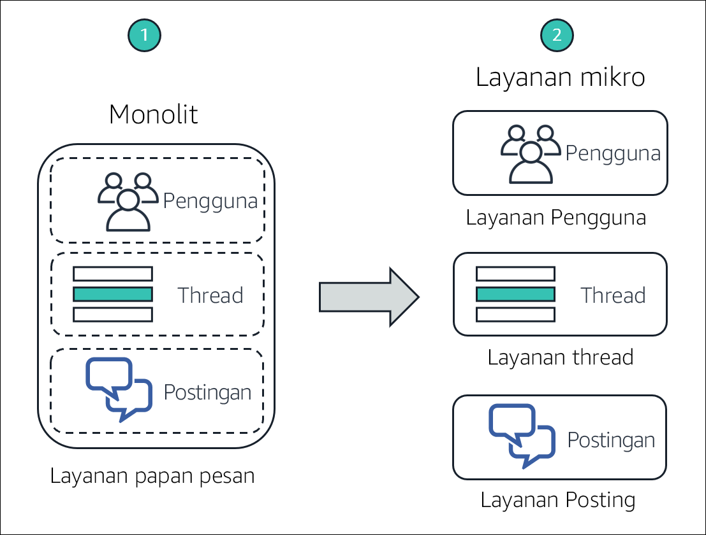
Diagram tersebut menyoroti perbedaan antara pendekatan monolitik dan desain layanan mikro berikut ini:
- Dalam desain monolitik, semua fungsi dari aplikasi Node.js dikemas dan dijalankan sebagai layanan tunggal. Jika salah satu fungsi gagal, seluruh aplikasi gagal. Demikian juga, jika satu fungsi aplikasi mengalami lonjakan permintaan, semua fungsi dalam layanan harus ditingkatkan bersama-sama.
- Dalam arsitektur layanan mikro, setiap fungsi dari aplikasi Node.js berjalan sebagai layanan terpisah. Layanan dapat meningkat dan diperbarui secara terpisah dari layanan lain.
Durasi
Dibutuhkan sekitar 3 jam untuk menyelesaikan lab ini.
Pembatasan layanan AWS
Dalam lingkungan lab ini, akses ke layanan AWS dan tindakan layanan mungkin dibatasi untuk orang-orang yang diperlukan untuk menyelesaikan instruksi lab. Anda mungkin akan mengalami error jika mencoba mengakses layanan lain atau melakukan tindakan di luar yang dijelaskan di lab ini.
Mengakses Konsol Manajemen AWS
Di bagian atas instruksi ini, pilih Start Lab (Mulai Lab) untuk meluncurkan lab Anda.
Panel Start Lab (Mulai Lab) terbuka dan menampilkan status lab.
Tip: Jika Anda memerlukan lebih banyak waktu untuk menyelesaikan lab, mulai ulang pengatur waktu untuk lingkungan dengan memilih tombol Start Lab (Mulai Lab) lagi.
Tunggu hingga panel Start Lab (Mulai Lab) menampilkan pesan Lab status: ready (Status lab: siap), lalu tutup panel dengan memilih X.
Di bagian atas instruksi ini, pilih AWS.
Tindakan ini akan membuka Konsol Manajemen AWS di tab browser baru. Anda akan masuk ke sistem secara otomatis.
Tip: Jika tab browser baru tidak terbuka, banner atau ikon biasanya berada di bagian atas browser Anda dengan pesan bahwa browser Anda mencegah situs membuka jendela sembulan. Pilih banner atau ikon, lalu pilih Allow pop-ups (Izinkan sembulan).
Atur tab AWS Management Console(Konsol Manajemen AWS) agar ditampilkan bersama instruksi ini. Idealnya, Anda perlu membuka kedua tab browser secara bersamaan, sehingga Anda dapat mengikuti langkah-langkah lab dengan lebih mudah.
Jangan mengubah Wilayah kecuali secara khusus diperintahkan untuk melakukannya.
Tugas 1: Mempersiapkan lingkungan pengembangan
Lingkungan AWS Cloud9 dibuat untuk Anda selama proses pembuatan lingkungan lab. AWS Cloud9 adalah lingkungan pengembangan terintegrasi (IDE) berbasis cloud yang bisa digunakan untuk menulis, menjalankan, dan men-debug kode pada browser. AWS Cloud9 hadir berupa paket dengan alat-alat yang penting untuk bahasa pemrograman populer, dan menyediakan akses ke AWS Command Line Interface (AWS CLI) di tab sesi terminal. Lingkungan AWS Cloud9 Anda memiliki akses ke semua sumber daya AWS yang diizinkan untuk ID pengguna yang Anda gunakan untuk masuk ke Konsol Manajemen AWS.
Untuk menyiapkan lingkungan pembangunan, Anda akan membuka AWS Cloud9 IDE, serta mengunduh dan mengekstrak *file *lab** yang diperlukan.
Di tab browser AWS Management Console (Konsol Manajemen AWS), perluas All services (Semua layanan), lalu pilih Developer Tools > Cloud9 (Alat Developer > Cloud9).
Di kartu Cloud9-IDE, pilih Open IDE (Buka IDE)
IDE terbuka di tab browser baru dan menampilkan beberapa tab, termasuk tab Welcome (Selamat Datang).
Selanjutnya, Anda akan mengunduh dan mengekstrak file lab yang diperlukan.
Di panel bawah IDE, masukkan perintah berikut di tab terminal berlabel bash - “ip-nnn-nnn-nnn-nnn”:
xxxxxxxxxxcurl -s https://aws-tc-largeobjects.s3.amazonaws.com/ILT-TF-100-TUHAWA-1/lab-four/lab-files-ms-node-js.tar.gz | tar -zxvPerintah ini mengambil file arsip terkompresi yang berisi file lab. Perintah ini juga mengekstrak isi file dalam folder ~/environment AWS Cloud9. Perintah output harus seperti contoh berikut:
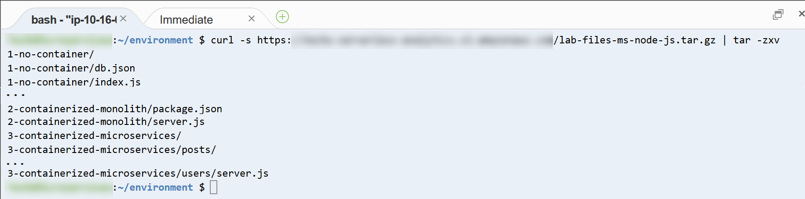
File yang diunduh dan diekstrak terlihat di jendela Environment (Lingkungan) (di panel kiri).

Anda dapat melihat folder berikut:
- 1-no-container — Berisi file yang terkait dengan implementasi monolithic (monolitik) aplikasi. Implementasi ini dimaksudkan untuk berjalan langsung pada server Node.js.
- 2-containerized-monolith — Berisi file yang terkait dengan implementasi monolithic (monolitik) dari aplikasi. Implementasi ini dimaksudkan untuk berjalan di lingkungan Docker dalam kontainer, diorkestrasi oleh Amazon ECS.
- 3-containerized-microservices — Berisi file yang terkait dengan implementasi microservices (layanan mikro) dari aplikasi. Implementasi ini dimaksudkan untuk berjalan di lingkungan Docker dalam kontainer, diorkestrasi oleh Amazon ECS.
Tetap buka tab AWS Cloud9 IDE di seluruh lab ini, karena Anda akan sering menggunakannya.
Tugas 2: Menjalankan aplikasi pada server Node.js dasar
Aplikasi Node.js dasar adalah layanan monolitik yang dirancang untuk berjalan langsung pada server, tanpa kontainer. Dalam tugas ini, Anda men-deploy aplikasi ke server Node.js yang diinstal pada instans yang menjalankan lingkungan AWS Cloud9 Anda. Anda kemudian menguji aplikasi dengan menggunakan terminal AWS CLI untuk memanggil metode API RESTful.
Arsitektur deployment dan alur permintaan diilustrasikan dalam diagram berikut.
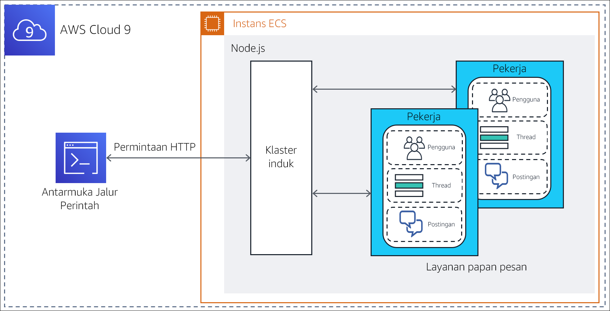
Catatan: Implementasi monolitik aplikasi menggunakan fungsi klaster Node.js untuk menghasilkan satu proses pekerja per inti CPU. Proses berbagi port tunggal, dan dipanggil secara round-robin oleh penyeimbang beban yang dibangun ke dalam Node.js. Fitur ini meningkatkan skalabilitas pada server yang memiliki beberapa inti CPU.
Dalam tugas ini, Anda akan:
- Menginstal modul Node.js yang diperlukan oleh aplikasi
- Meninjau desain dan kode aplikasi
- Menjalankan aplikasi
Tugas 2.1: Menginstal modul Node.js yang diperlukan
Aplikasi papan pesan menggunakan dua modul dari kerangka kerja koa Node.js dalam implementasinya: koa dan koa-router. Koa.js adalah kerangka kerja aplikasi web Node.js yang banyak digunakan yang memfasilitasi pembangunan aplikasi JavaScript sisi server yang asinkron.
Dalam tab terminal, masukkan perintah berikut untuk menginstal modul koa dan koa-router:
xxxxxxxxxxcd ~/environment/1-no-containernpm install koanpm install koa-router
Modul diunduh dan diinstal dalam folder 1-no-container/node_modules dari folder ~/environment AWS Cloud9. Anda dapat mengabaikan pemberitahuan, peringatan, dan pesan pembaruan dalam output.
Tugas 2.2: Meninjau desain dan kode aplikasi
Komponen yang menerapkan aplikasi papan pesan monolitik berada di folder 1-no-container. Tinjau komponen tersebut untuk mendapatkan pemahaman tentang desain dan kode aplikasi.
Di jendela Environment (Lingkungan) di sebelah kiri, perluas folder 1-no-container. Komponen aplikasi meliputi:
- Folder node_modules – Folder ini dibuat ketika Anda menginstal modul JavaScript yang diperlukan dalam subtugas sebelumnya. Folder ini berisi kode sumbernya.
- db.json – Sebuah objek JavaScript Object Notation (JSON) yang menyimulasikan basis data papan pesan. Objek ini berisi atribut yang mewakili pengguna, utas, dan posting, dengan nilai-nilai sampel yang sesuai.
- index.js – Program JavaScript yang merupakan titik masuk aplikasi.
- package.json – Sebuah objek JSON yang menjelaskan aplikasi, titik masuk, dan dependensinya.
- package-lock.json – Sebuah objek JSON yang secara otomatis dihasilkan ketika Anda menginstal modul JavaScript yang diperlukan dalam folder node_modules. Objek ini digunakan oleh utilitas instalasi, npm, untuk melacak modifikasi yang dibuat pada folder.
- server.js – Program JavaScript yang mendefinisikan metode API RESTful aplikasi, dan mengimplementasikan handler masing-masing.
Periksa objek package.json. Di jendela Environment (Lingkungan), buka package.json di tab editor dengan mengekliknya dua kali. Perhatikan atribut berikut dari objek JSON:
- Baris 2 sampai 5 – Atribut dependensi mendefinisikan dependensi modul JavaScript untuk aplikasi. Perhatikan bahwa modul koa dan koa-router yang Anda instal di subtugas sebelumnya tercantum di sini.
- Baris 6 sampai 8 – Atribut skrip menyatakan program index.js sebagai titik masuk ke aplikasi.
- Periksa objek db.json. Di jendela Environment (Lingkungan), buka db.json di tab editor dengan mengekliknya dua kali. Perhatikan atribut berikut dari objek JSON:
Baris 2 sampai 27 – Baris-baris ini menentukan atribut pengguna yang mewakili pengguna terdaftar dari papan pesan. Nilai atribut adalah sebuah daftar berisi empat sampel pengguna dengan nama berikut: Marcerline Singer, Finn Alberts, Paul Barium, dan Jake Storm.
Baris 29 sampai 45 – Baris-baris ini menentukan atribut utas yang mewakili utas aktif saat ini di papan pesan. Nilai atribut adalah sebuah daftar beris tiga sampel utas dengan judul berikut:
- Did you see the Brazil game?
- New French bakery opening in the neighborhood tomorrow
- In search of a new guitar
- Baris 47 sampai 78 – Baris-baris ini menentukan atribut posting yang mewakili pesan yang diposting pada utas aktif. Nilai atribut adalah sebuah daftar berisi enam sampel posting pesan.
- Tinjau kode untuk index.js. Di jendela Environment (Lingkungan), buka index.js di tab editor dengan mengekliknya dua kali. Perhatikan informasi berikut:
- Baris 1 sampai 3 – Baris-baris ini mengimpor modul JavaScript yang dibutuhkan program, khususnya: klaster, http, dan os.
- Baris 3 – Baris ini menggunakan modul os untuk menanyakan jumlah inti CPU yang tersedia di server.
- Baris 5 sampai 15 – Baris-baris ini dijalankan pertama kalinya saat program dipanggil (ketika aplikasi dimulai). Baris tersebut membuat utas Leader (Pemimpin) untuk klaster dan satu utas worker (pekerja) untuk setiap inti CPU yang tersedia di server.
- Baris 16 sampai 19 – Baris-baris ini menangani setiap permintaan pada aplikasi dengan memanggil program server.js di utas worker (pekerja) saat ini.
- Terakhir, tinjau kode untuk server.js. Di jendela Environment (Lingkungan), buka server.js di tab editor dengan mengekliknya dua kali. Gunakan komentar yang disediakan dalam kode untuk memudahkan pemahaman Anda tentang logika. Secara khusus, perhatikan informasi berikut ini:
Baris 3 – Baris ini mengimpor db.json, objek JSON yang menyimulasikan basis data.
Baris 6 sampai 11 – Baris-baris ini menentukan fungsi generator yang berjalan untuk setiap permintaan. Tujuannya adalah untuk mencetak baris yang berisi metode HTTP, URL jalur sumber daya, dan waktu respons untuk setiap permintaan yang diproses.
Baris 13 sampai 47 – Baris-baris ini menentukan metode API RESTful aplikasi dan implementasinya. Secara khusus, aplikasi dapat menanggapi panggilan RESTful berikut.
GET /api/users: Mengembalikan koleksi pengguna dalam basis dataGET /api/users/:userId: Mengembalikan informasi untuk pengguna yang diidentifikasi oleh :userIdGET /api/threads: Mengembalikan koleksi utas dalam basis dataGET /api/threads/:threadId: Mengembalikan informasi untuk utas yang diidentifikasi oleh :threadIdGET /api/posts/in-thread/:threadId: Mengembalikan koleksi pesan posting untuk utas yang diidentifikasi oleh :threadIdGET /api/posts/by-user/:userId: Mengembalikan koleksi pesan posting untuk pengguna yang diidentifikasi oleh :userIdGET /api/: Mengembalikan pesan API ready to receive requests (API siap untuk menerima permintaan)GET /: Mengembalikan pesan Ready to receive requests (Siap untuk menerima permintaan)
Baris 52 - Baris ini mendefinisikan nomor port tempat aplikasi mendengarkan permintaan
Tugas 2.3: Menjalankan aplikasi
Dalam subtugas ini, Anda akan memulai server Node.js dan menjalankan aplikasi papan pesan. Kemudian, Anda akan menguji beberapa metode API RESTful.
Di tab terminal, mulai Node.js dan aplikasi dengan memasukkan perintah berikut:
xxxxxxxxxxnpm start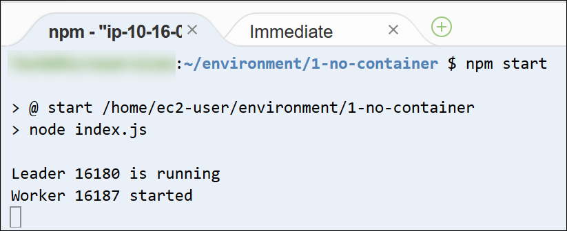
Server dimulai, dan titik masuk aplikasi, index.js, dijalankan. Pertama kali dipanggil, * index.js* membuat dua utas klaster—Leader dan * Worker*—untuk memproses permintaan.
Selanjutnya, Anda akan membiarkan sesi terminal saat ini tetap aktif dan membuka tab terminal kedua untuk menguji API RESTful aplikasi.
Di panel bawah, buka tab terminal baru dengan memilih (+) dan memilih New Terminal (Terminal Baru). Anda sekarang memiliki dua terminal tempat Anda bisa memasukkan perintah.
Di tab terminal kanan, ambil sumber daya
/api/usersdengan memasukkan perintah berikut:xxxxxxxxxxcurl localhost:3000/api/usersPanggilan RESTful mengembalikan objek JSON yang berisi daftar users (pengguna) dalam basis data papan pesan.
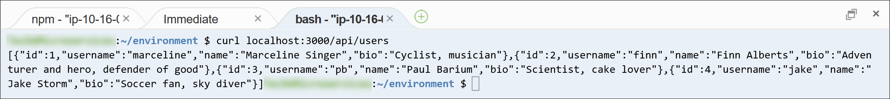
- Pilih left terminal tab (tab terminal kiri). Anda melihat pesan output dari server.js bahwa permintaan metode GET telah diproses pada sumber daya, yang diidentifikasi oleh jalur
/api/users. Diperlukan waktu 4 milidetik untuk memproses permintaan ini.
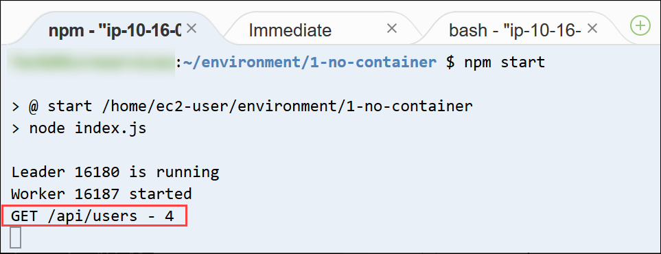
Ambil informasi hanya untuk pengguna keempat dalam basis data. Di tab terminal kanan, masukkan perintah berikut:
xxxxxxxxxxcurl localhost:3000/api/users/4Informasi untuk Jake Storm, pengguna keempat dalam basis data, dikembalikan:

Selanjutnya, ambil semua utas yang saat ini ada dalam basis data. Di tab terminal kanan, masukkan perintah berikut:
xxxxxxxxxxcurl localhost:3000/api/threadsObjek JSON yang berisi semua utas dalam basis data dikembalikan:

Terakhir, ambil semua posting untuk utas pertama dalam basis data. Di tab terminal kanan, masukkan perintah berikut:
xxxxxxxxxxcurl localhost:3000/api/posts/in-thread/1Objek JSON yang berisi dua posting pesan dikembalikan:

Hentikan server Node.js. Di left terminal tab (tab terminal kiri), tekan CTRL+C untuk mengakhiri proses server.
Anda telah memvalidasi bahwa aplikasi merespon permintaan GET dengan benar. Pada tugas berikutnya, Anda akan memasukkan aplikasi dalam kontainer.
Tugas 3: Melakukan containerization monolit untuk Amazon ECS
Kontainer membungkus kode aplikasi dalam unit deployment, yang menangkap snapshot kode dan dependensinya. Kontainer dapat membantu memastikan bahwa aplikasi men-deploy dengan cepat, andal, dan konsisten, terlepas dari lingkungan deployment-nya.
Dalam tugas ini, Anda akan membangun gambar kontainer untuk aplikasi papan pesan monolitik dan mendorongnya ke Amazon Elastic Container Registry (Amazon ECR). Langkah ini mempersiapkan aplikasi untuk deployment ke Amazon ECS.
Secara khusus, Anda akan melakukan langkah-langkah berikut:
- Menyiapkan aplikasi untuk containerization Docker
- Menyediakan repositori
- Membangun dan mendorong gambar Docker ke repositori
Tugas 3.1: Mempersiapkan aplikasi untuk containerization Docker
Untuk menempatkan aplikasi papan pesan ke dalam kontainer Docker, perubahan berikut harus dilakukan pada aplikasi:
- Hapus penggunaan fitur cluster Node.js dan konversi aplikasi menjadi desain proses tunggal. Dengan kontainer Docker, tujuannya adalah untuk menjalankan satu proses tunggal per kontainer, bukan satu klaster proses.
- Buat Dockerfile untuk aplikasi. File ini pada dasarnya adalah skrip bangunan yang berisi instruksi tentang cara membangun gambar kontainer untuk aplikasi.
Versi aplikasi yang siap-kontainer disediakan untuk Anda dalam folder 2-containerized-monolith lingkungan AWS Cloud9 Anda. Luangkan beberapa menit untuk meninjau file dan memahami perubahan yang dibuat guna mempersiapkan aplikasi untuk containerization.
- Di jendela Environment (Lingkungan) di sebelah kiri, perluas folder 2-containerized-monolith, dan buka package.json di tab editor dengan mengekliknya dua kali.
Di Baris 7, perhatikan bahwa titik masuk ke dalam aplikasi diubah dari index.js menjadi server.js. File index.js tidak lagi ada dalam folder aplikasi. File index.js berisi logika inisialisasi untuk fitur cluster Node.js, dan Anda tidak akan lagi menggunakan fitur tersebut.
- Di jendela Environment (Lingkungan), perluas folder 2-containerized-monolith, dan buka file server.js di tab editor dengan mengekliknya dua kali.
Satu-satunya perbedaan dari versi tanpa kontainer adalah penambahan Baris 54, yang mencetak pesan Worker started (Pekerja dimulai) saat aplikasi pertama kali dimulai.
- Di jendela Environment (Lingkungan), perluas folder 2-containerized-monolith, dan buka Dockerfile di tab editor dengan mengekliknya dua kali.
File ini berisi instruksi tentang cara membangun gambar kontainer untuk aplikasi.

Perhatikan informasi berikut:
- Baris 1 - Gambar dasar tempat gambar kontainer akan dibangun. alpine-node, yang merupakan gambar Node.js, ada di sini.
- Baris 3 – Baris ini menetapkan direktori kerja sistem file pada gambar ke /srv.
- Baris 4 – Baris ini menambahkan isi folder 2-containerized-monolith (folder aplikasi) ke direktori kerja sistem file gambar saat ini (yang ditetapkan di baris sebelumnya).
- Baris 5 – Baris ini memanggil perintah npm install untuk menginstal semua dependensi pustaka aplikasi yang dinyatakan dalam file package.json.
- Baris 7 – Baris ini menginformasikan Docker bahwa kontainer mendengarkan pada port 3000 ketika berjalan.
- Baris 8 – Baris ini meminta Docker untuk menjalankan perintah node server.js, yang memulai aplikasi ketika gambar dimulai.
Karena telah memahami bagaimana gambar kontainer untuk aplikasi dibangun, selanjutnya Anda akan memeriksa tempat untuk menempatkan gambar setelah dibangun.
Tugas 3.2: Menyediakan repositori
Gambar kontainer Docker dimaksudkan untuk disimpan dalam repositori untuk tujuan berbagi, kontrol versi, dan manajemen yang lebih mudah. Amazon ECR memudahkan developer untuk menyimpan, mengelola, dan men-deploy gambar kontainer Docker. Selain itu, Amazon ECR terintegrasi dengan Amazon ECS, yang memungkinkan Amazon ECS untuk menarik gambar kontainer secara langsung untuk deployment produksi.
Dalam subtugas ini, Anda akan membuat repositori di Amazon ECR sebagai tempat gambar kontainer Docker untuk aplikasi papan pesan.
- Di tab browser Your environments (Lingkungan Anda), pilih Services (Layanan), dan kemudian pilih Container > Elastic Container Registry (Kontainer > Elastic Container Registry).
Konsol Amazon ECR terbuka.
- Dalam Create a repository (Buat repositori), pilih Get Started (Mulai).
- Dalam kotak Repository name (Nama repositori), masukkan
mb-repo. - Pilih Create repository (Buat repositori).
Sebuah pesan di bagian atas halaman menunjukkan bahwa repositori berhasil dibuat.
Catatan: Jangan tutup jendela yang menampilkan pesan. Anda akan menggunakannya di subtugas berikutnya.
Tugas 3.3: Membangun dan mendorong gambar Docker
Anda sekarang siap untuk membangun gambar kontainer untuk aplikasi dan mendorongnya ke repositori Amazon ECR yang Anda buat.
Salah satu fitur yang berguna dari konsol Amazon ECR adalah templat perintah siap pakai yang disediakan untuk membangun dan mendorong gambar ke repositori baru. Anda menggunakan perintah AWS CLI yang disediakan ini dalam langkah berikutnya.
Sebelum Anda berhasil menjalankan langkah berikutnya, Anda harus meningkatkan AWS CLI. Untuk melakukan ini, buka tab browser AWS Cloud9 IDE, dan dalam left terminal tab (tab terminal kiri), masukkan perintah berikut:
xxxxxxxxxxpip3 install awscli --upgrade --userexport PATH=$HOME/.local/bin:$PATHKembali ke tab browser konsol Amazon ECR, dan di jendela pesan pada bagian atas halaman, pilih View push commands (Lihat perintah push).
Jendela sembulan Push commands for mb-repo (Perintah push untuk mb-repo) terbuka. Jendela ini berisi empat perintah AWS CLI yang disesuaikan untuk mb-repo dan sengaja dibangun untuk:
- Mengautentikasi klien Docker Anda ke registri Amazon ECR
- Membangun gambar Docker Anda
- Menandai gambar Docker Anda
- Mendorong gambar Docker Anda ke repositori
Jendela pop-up menawarkan dua versi perintah: satu untuk macOS/Linux dan satu untuk Microsoft Windows.
- Pastikan tab macOS/Linux dipilih karena Anda akan menjalankan perintah ini di lingkungan AWS Cloud9 Anda.
Pertama, Anda akan menyalin dan menjalankan perintah untuk memasukkan klien Docker Anda ke registri Anda.
Di jendela sembulan, cari perintah pertama dan kemudian salin perintah ke clipboard dengan memilih ikon Copy (Salin).
Perintah ini terlihat seperti contoh berikut:
xxxxxxxxxx$ aws ecr get-login-password --region us-east-1 | docker login --username AWS --password-stdin 01234567890.dkr.ecr.us-east-1.amazonaws.com/mb-repoBeralih ke tab browser AWS Cloud9 IDE.
Di left terminal tab (tab terminal kiri), tempelkan perintah yang disalin dan jalankan dengan menekan ENTER:
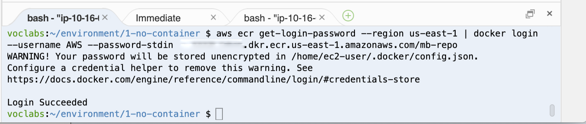
Jika berhasil dijalankan, perintah akan mengembalikan pesan Login Succeeded (Berhasil Masuk). Anda dapat mengabaikan peringatan yang ditampilkan.
Selanjutnya, Anda akan membangun gambar Docker untuk aplikasi Anda.
Catatan: Bila tab terminal tertentu tidak disebutkan dalam langkah instruksi, gunakan tab terminal kiri.
Di tab terminal, ubah direktori ke folder 2-containerized-monolith dengan memasukkan perintah berikut:
xxxxxxxxxxcd ~/environment/2-containerized-monolithBeralih ke tab browser konsol Amazon ECR.
Dalam jendela Push commands for mb-repo (Perintah push untuk mb-repo), cari perintah kedua dan salin perintah dengan memilih ikon Copy (Salin).
Perintah ini terlihat seperti contoh berikut:
xxxxxxxxxxdocker build -t mb-repo .Pastikan untuk menyertakan titik (.) di akhir perintah.
Beralih ke tab browser AWS Cloud9 IDE.
Dalam tab terminal, tempel perintah yang disalin dan jalankan dengan menekan ENTER:
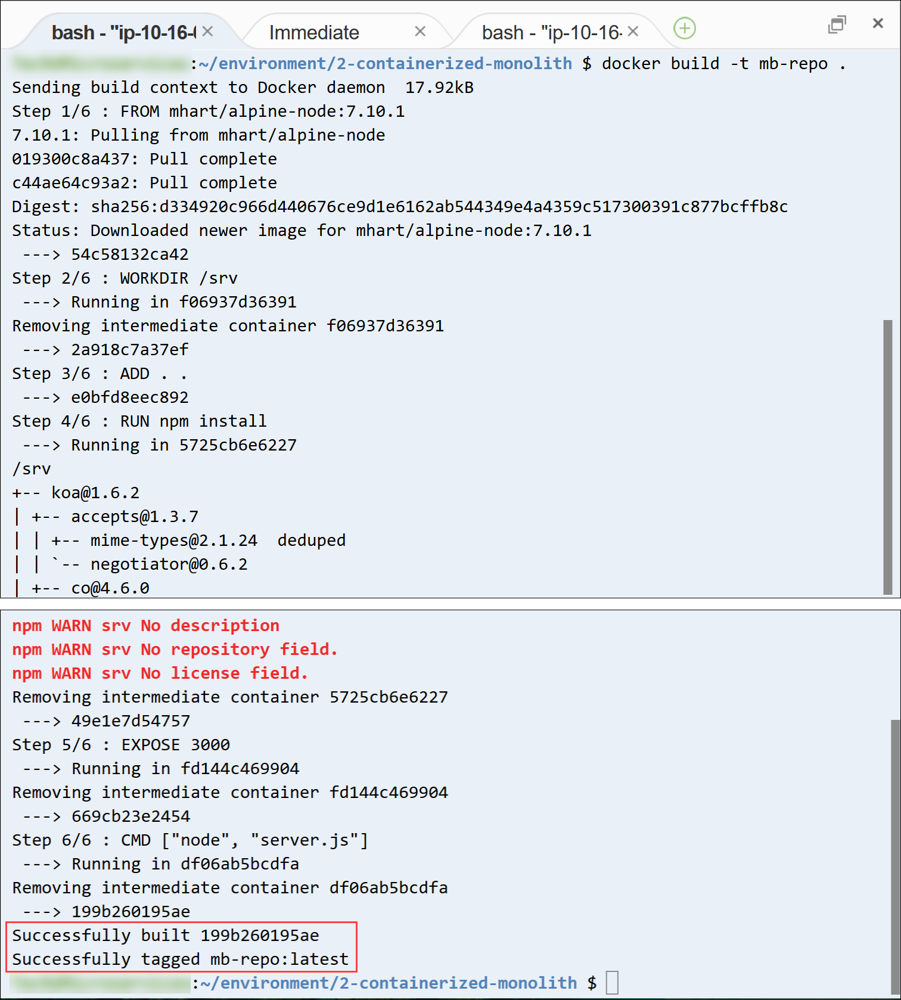
Perintah build (membangun) menghasilkan beberapa baris output saat menjalankan instruksi yang ada di Dockerfile aplikasi. Setelah selesai, Anda melihat pesan Successfully built nnnnnnnnnn (Berhasil dibangun nnnnnnnnnn) dan Successfully tagged mb-repo:latest (Berhasil ditandai mb-repo:latest).
Selanjutnya, Anda akan menandai gambar dengan URI repositori, sehingga dapat terdorong oleh repositori.
Beralih ke tab browser konsol Amazon ECR.
Dalam jendela Push commands for mb-repo (Perintah push untuk mb-repo), cari perintah ketiga dan pilih ikon Copy (Salin).
Perintah ini terlihat seperti contoh berikut:
xxxxxxxxxxdocker tag mb-repo:latest 1234567890.dkr.ecr.us-east-2.amazonaws.com/mb-repo:latestBeralih ke tab browser AWS Cloud9 IDE.
Di tab terminal, tempel dan jalankan perintah yang disalin:
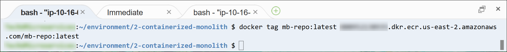
Perintah tidak mengembalikan apa pun jika berhasil diselesaikan.
Terakhir, Anda akan mendorong gambar kontainer ke repositori aplikasi.
Beralih ke tab browser konsol Amazon ECR.
Dalam jendela Push commands for mb-repo (Perintah push untuk mb-repo), cari perintah keempat dan salin.
Perintah ini terlihat seperti contoh berikut:
xxxxxxxxxxdocker push 1234567890.dkr.ecr.us-east-2.amazonaws.com/mb-repo:latestBeralih ke tab browser AWS Cloud9 IDE.
Di tab terminal, tempel dan jalankan perintah yang disalin:

Perintah menghasilkan beberapa pesan saat tiap lapisan gambar didorong ke repositori.
Selanjutnya, Anda akan memverifikasi bahwa gambar berhasil diunggah.
- Beralih ke tab browser konsol Amazon ECR.
- Tuto jendela Push commands for mb-repo (Perintah push untuk mb-repo).
- Dalam daftar Repositories (Repositori), pilih mb-repo.
Dalam daftar Gambar, Anda akan melihat gambar kontainer yang Anda dorong, yang dapat Anda identifikasi dengan tanda terbaru.
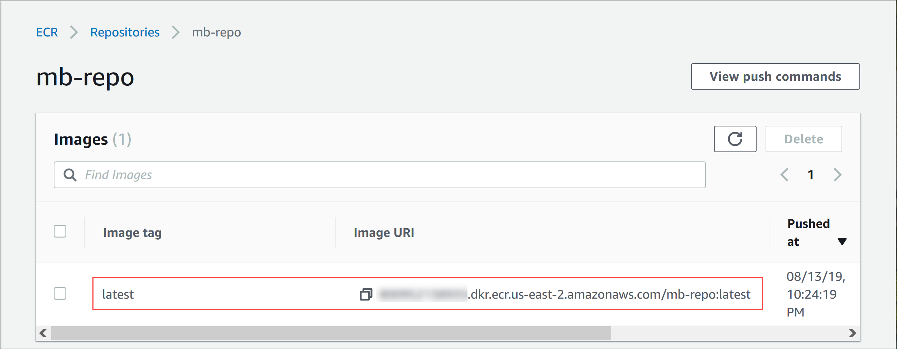
- Rekam Image URI (URI Gambar). Dalam daftar Images (Gambar), cari Image URI (URI Gambar) dari gambar versi terbaru, dan pilih ikon Copy (Salin). Tempel nilai dalam editor teks. Anda akan menggunakannya di langkah berikutnya.
Anda telah berhasil membuat gambar kontainer untuk aplikasi papan pesan, dan Anda juga telah mendorongnya ke repositori Amazon ECR.
Tugas 4: Men-deploy monolit ke Amazon ECS
Dalam tugas ini, Anda men-deploy aplikasi monolitik dalam kontainer ke lingkungan waktu aktif Amazon ECS. Secara khusus, Anda menggunakan Amazon ECS untuk membuat klaster terkelola instans Amazon Elastic Compute Cloud (Amazon EC2). Anda akan men-deploy gambar kontainer aplikasi Anda ke klaster ini. Klaster dikonfigurasi sebagai grup target Application Load Balancer, yang akan memberikan failover dan skalabilitas.
Diagram berikut menunjukkan arsitektur deployment aplikasi monolitik dalam kontainer. Diagram ini juga menampilkan sumber daya yang akan Anda buat dalam tugas ini.
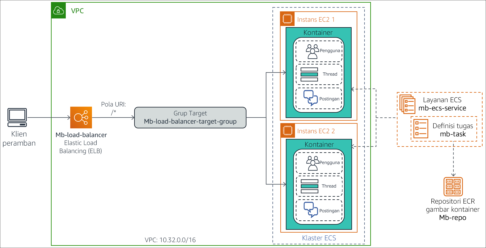
Langkah-langkah yang Anda lakukan dalam tugas ini adalah:
- Membuat klaster Amazon ECS.
- Membuat definisi tugas untuk gambar kontainer aplikasi.
- Membuat Application Load Balancer.
- Men-deploy aplikasi monolitik sebagai Layanan ECS.
- Uji aplikasi monolitik dalam kontainer.
Tugas 4.1: Membuat klaster Amazon ECS
Klaster Amazon ECS adalah pengelompokan logis instans EC2 tempat Anda dapat menjalankan tugas atau layanan yang mewakili aplikasi dalam kontainer Anda.
Dalam subtugas ini, Anda akan membuat sebuah klaster ECS dengan menggunakan konsol Amazon ECS. Wizard pembuatan klaster konsol memungkinkan Anda untuk membuat semua komponen infrastruktur yang diperlukan untuk membuat lingkungan klaster ECS. Komponen ini mencakup virtual private cloud (VPC), subnet, grup keamanan, gateway internet, dan peran AWS Identity and Access Management (IAM).
- Kembali ke tab browser AWS Management Console (Konsol Manajemen AWS), pilih Service (Layanan), lalu pilih Containers > Elastic Container Service (Kontainer > Elastic Container Service).
- Di panel navigasi, pilih Amazon ECS > Cluster (Amazon ECS > Klaster).
- Di halaman Cluster (Klaster), pilih Create Cluster (Buat Klaster).
- Di halaman Select cluster template (Pilih templat klaster), pilih kartu EC2 Linux + Networking (EC2 Linux + Jaringan).
- Pilih Next step (Langkah berikutnya).
- Di wizard Configure cluster (Konfigurasi klaster), konfigurasikan pengaturan berikut.
- Cluster name (Nama klaster):
mb-ecs-cluster - Provisioning Model (Model Penyediaan): On-Demand Instance (Instans Sesuai Permintaan)
- EC2 instance type (Tipe instans EC2): t2.micro
- Number of instances (Jumlah instans):
2 - VPC: Create a new VPC (Buat VPC baru)
- CIDR block (Blok CIDR):
10.32.0.0/16 - Subnet 1:
10.32.0.0/24 - Subnet 2:
10.32.1.0/24 - Security group (Grup keamanan): Create a new security group (Buat grup keamanan baru)
- Security group inbound rules (Aturan masuk grup keamanan): Biarkan di pengaturan default, yang mengizinkan lalu lintas masuk dari semua alamat IP pada port 80.
Catatan: Pesan di bagian Container instance IAM role (IAM role instans kontainer) menyatakan bahwa Anda memberikan izin kepada Amazon ECS untuk membuat dan menggunakan ecsInstanceRole. Peran ini mengotorisasi instans EC2 di klaster untuk memanggil tindakan Amazon ECS.
- Pilih Create (Buat).
Halaman Launch Status (Status Peluncuran) terbuka, dan menunjukkan tugas yang dilakukan oleh wizard.
- Tunggu sampai semua tugas memiliki tanda centang, yang menunjukkan bahwa tugas tersebut selesai.
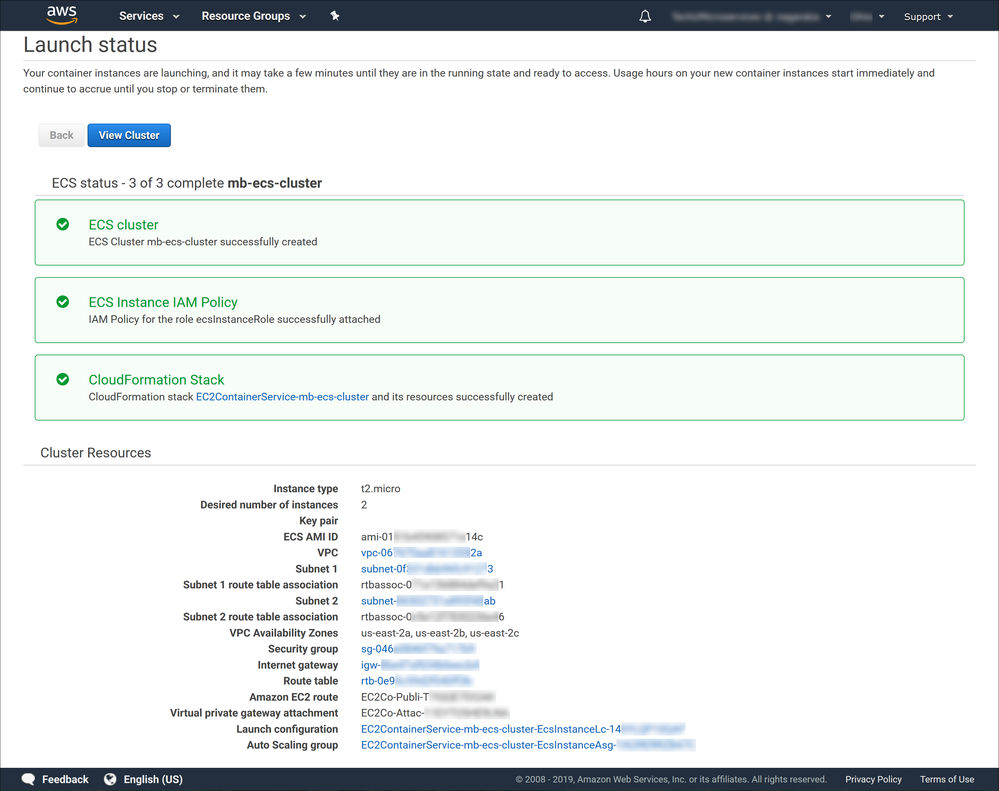
Sumber daya yang dibuat wizard tercantum di bagian Cluster Resources (Klaster Sumber daya).
- Pilih View Cluster (Lihat Klaster).
Halaman detail untuk mb-ecs-cluster terbuka. Bidang Status menunjukkan nilai ACTIVE (AKTIF).
- Pilih tab ECS Instance (Instans ECS).
Kedua instans EC2 untuk klaster (yang dibuat oleh wizard) terdaftar.
Catatan: Mungkin diperlukan waktu beberapa menit untuk menampilkan dua instans EC2 dalam daftar. Jika Anda tidak melihat kedua instans, pilih Refresh (Segarkan).

- Pilih tab Tasks (Tugas).
Tidak ada tugas yang di-deploy ke klaster. Selanjutnya Anda akan membuat satu tugas.
Tugas 4.2: Membuat definisi tugas untuk gambar kontainer aplikasi
Definisi tugas adalah daftar pengaturan konfigurasi mengenai cara menjalankan kontainer Docker di Amazon ECS. Definsi ini memberitahu Amazon ECS berbagai macam informasi, seperti:
- Gambar kontainer apa yang harus dijalankan?
- Berapa banyak CPU dan memori yang dibutuhkan kontainer?
- Port apa yang didengarkan oleh kontainer untuk lalu lintas?
Dalam subtugas ini, Anda akan membuat definisi tugas untuk gambar kontainer dari aplikasi papan pesan.
- Di panel navigasi tab browser konsol Amazon ECS, pilih Task Definitions (Definisi Tugas).
- Pilih Create new Task Definition (Buat Definisi Tugas baru).
- Di halaman Select launch type compatibility (Pilih kompatibilitas jenis peluncuran), pilih kartu EC2.
- Pilih Next step (Langkah berikutnya).
Halaman Configure task and container definitions (Konfigurasikan tugas dan definisi kontainer) terbuka.
- Dalam kotak Task Definition Name (Nama Definisi Tugas), masukkan
mb-task. - Gulir ke bawah Container Definitions (Definisi Kontainer) dan pilih Add container (Tambahkan container).
Jendela Add container (Tambahkan kontainer) terbuka.
- Konfigurasikan pengaturan berikut ini.
- Container name (Nama kontainer):
mb-container - Image (Gambar): Tempelkan Image URI (URI Gambar) dari gambar kontainer aplikasi, yang telah Anda salin ke editor teks pada langkah sebelumnya.
- Memory Limits (Batas Memori): Pilih *Hard *limit** (Batas keras) dan masukkan
256. (Pengaturan ini menentukan jumlah maksimum memori yang diperbolehkan untuk digunakan oleh kontainer.) - Port mappings > Container port (Pemetaan port > Port kontainer):
3000(Pengaturan ini menentukan port tempat kontainer menerima permintaan. Anda tidak perlu memasukkan nilai dalam Host port (Port host)
Jendela Add container (Tambahkan kontainer) akan terlihat seperti contoh berikut:

- Pilih Add (Tambah).
- Gulir ke bawah dan pilih Create (Buat). Anda dapat mengabaikan peringatan apa pun.
Sebuah pesan ditampilkan, menunjukkan bahwa definisi tugas berhasil dibuat. Perhatikan bahwa definisi secara otomatis diberi nomor versi 1.
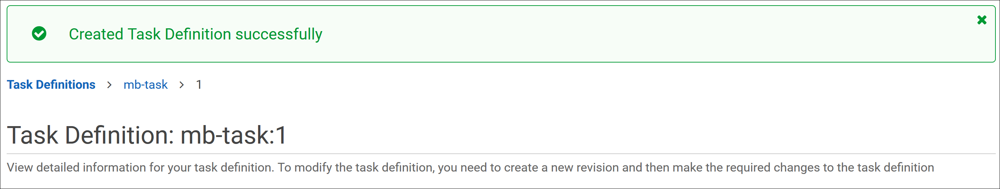
Anda sekarang memiliki definisi tugas yang memberitahu Amazon ECS cara men-deploy kontainer aplikasi Anda di seluruh klaster.
Tugas 4.3: Membuat Application Load Balancer
Selanjutnya, Anda akan membuat Application Load Balancer yang mendistribusikan permintaan masuk ke instans EC2 yang berjalan di klaster ECS. Penyeimbang beban ini berada di VPC yang sama dan menggunakan grup keamanan yang sama dengan klaster ECS.
- Di tab browser konsol Amazon ECS, pilih Services (Layanan), lalu pilih Compute (Komputasi) > EC2.
- Di panel navigasi, gulir ke bawah dan pilih Load Balancers (Penyeimbang Beban).
- Pilih Create Load Balancer (Buat Penyeimbang Beban).
Halaman Select load balancer type (Pilih jenis penyeimbang beban) terbuka.
- Di kartu Application Load Balancer, pilih Create (Buat).
Wizard pembuatan Application Load Balancer terbuka.
- Pada Step 1: Configure Load Balancer (Langkah 1: Konfigurasikan Penyeimbang Beban), konfigurasikan pengaturan berikut.
Name (Nama):
mb-load-balancerGulir ke bawah sesi Availability Zone dan masukkan pengaturan ini.
- VPC: Pilih Amazon ECS cluster VPC ID. ID ini serupa dengan vpc-nnnnnnnnnn (10.32.0.0/16)
- Availability Zone: Pilih kedua Availability Zone.
- Pilih Next: Configure Security Settings (Berikutnya: Konfigurasikan Pengaturan Keamanan).
- Pada Step 2: Configure Security Settings (Langkah 2: Konfigurasikan Pengaturan Keamanan), Anda dapat mengabaikan peringatan bahwa penyeimbang beban Anda tidak menggunakan listener yang aman. Pilih Next: Configure Security Groups (Berikutnya: Konfigurasikan Grup Keamanan).
- Pada Step 3: Configure Security Groups (Langkah 3: Konfigurasikan Grup Keamanan), konfigurasikan pengaturan ini.
Assign a security group (Tetapkan grup keamanan): Pilih grup keamanan yang ada
Security Group ID (ID Grup Keamanan):
- Hapus default.
- Pilih EC2ContainerService-mb-ecs-cluster-EcsSecurityGroup. (Ini adalah grup keamanan dari klaster ECS Anda.)
- Pilih Next: Configure Routing (Berikutnya: Konfigurasikan Perutean).
- Pada Step 4: Configure Routing (Langkah 4: Konfigurasikan Perutean), konfigurasikan pengaturan berikut.
Target group (Grup target): New target group (Grup target baru) (Anda menggunakan wizard untuk membuat grup target baru untuk penyeimbang beban.)
Name (Nama):
mb-load-balancer-target-gorupProtocol (Protokol) dan Port: Biarkan pengaturan ini pada nilai default HTTP dan 80. Aplikasi minta diakses melalui permintaan HTTP RESTful.
Perluas Advanced health check settings (Pengaturan pemeriksaan kesehatan lanjutan) dan masukkan pengaturan berikut.
- Healthy threshold (Ambang batas sehat):
2(Pengaturan ini memberi tahu penyeimbang beban bahwa target dianggap sehat jika menerima dua pemeriksaan kesehatan yang berhasil berturut-turut darinya.) - Interval:
6(Pengaturan ini meningkatkan frekuensi pemeriksaan kesehatan menjadi setiap 6 detik sekali.)
- Healthy threshold (Ambang batas sehat):
- Pilih Next: Register Targets (Berikutnya: Daftarkan Target).
- Anda dapat melewatkan Step 5: Register Targets (Langkah 5: Daftarkan Target) karena Anda akan mendaftarkan layanan ECS sebagai target pada langkah berikutnya. Pilih Next: Review (Berikutnya: Tinjauan).
- Di halaman Review** (Tinjauan), pastikan bahwa pengaturan sudah benar, lalu pilih Create (Buat).**
Sebuah pesan seharusnya menunjukkan bahwa penyeimbang beban berhasil dibuat.
- Pilih Close (Tutup).
mb-load-balancer sekarang dalam daftar penyeimbang beban.
- Tunggu beberapa saat, lalu pilih ikon Refresh (Segarkan). Status penyeimbang beban harus berubah menjadi active (aktif).

Untuk menyelesaikan konfigurasi penyeimbang beban, Anda akan memodifikasi grup keamanannya untuk membuka port yang mengizinkan komunikasi internal antara penyeimbang beban dan instans dalam klaster ECS.
- Pada tab Description** (Deskripsi) di bagian bawah, gulir ke bawah ke bagian Keamanan.**
- Di samping Security Groups (Grup Keamanan), pilih tautan ID grup keamanan, yang seharusnya serupa dengan sg-nnnnnnnnnn.
Halaman detail grup keamanan penyeimbang beban terbuka.
- Untuk menyalin ID grup keamanan ke clipboard, buka tab Details (Detail) (di panel bawah), arahkan kursor ke security group ID (ID grup keamanan), lalu pilih ikon Copy (Salin).
Anda akan menggunakan ID ini pada langkah berikutnya.
- Di panel bawah, pilih tab Inbound rules (Aturan masuk).
Aturan masuk untuk grup keamanan ditampilkan.
- Pilih Edit inbound rules (Edit aturan masuk).
Jendela dialog Edit inbound rules (Edit aturan masuk) terbuka.
- Pilih Add rule (Tambahkan aturan).
Baris baru muncul dalam daftar aturan, sehingga Anda dapat menambahkan aturan baru. Hal ini sudah dikonfigurasikan sebelumnya untuk Custom TCP Rule (Aturan TCP Kustom), yang merupakan jenis yang ingin Anda tambahkan.
- Di baris baru, tambahkan konfigurasi berikut.
- Port Range (Jangkauan Port):
31000-61000 - Source > Custom (Sumber > Kustom): Tempelkan ID grup keamanan dari clipboard.
- Pilih Save rules (Simpan aturan).
Daftar aturan masuk grup keamanan menunjukkan aturan baru yang Anda tambahkan.

Tugas 4.4: Men-deploy monolit sebagai layanan ECS
Anda telah membuat semua komponen infrastruktur Amazon ECS yang diperlukan. Dalam subtugas ini, Anda akan men-deploy aplikasi monolitik dalam kontainer ke klaster sebagai layanan Amazon ECS.
Layanan ECS memungkinkan Anda untuk menjalankan dan mempertahankan sejumlah instans definisi tugas secara bersamaan dalam klaster ECS. Jika salah satu tugas gagal atau berhenti untuk alasan apa pun, pengatur jadwal layanan ECS akan meluncurkan instans definisi tugas lain untuk menggantinya. Dengan demikian, jumlah tugas yang diinginkan yang ditentukan dalam layanan tetap dapat dipertahankan.
Anda sekarang akan membuat layanan ECS untuk definisi tugas aplikasi papan pesan dengan menggunakan konsol Amazon ECS.
- Di tab browser AWS Management Console (Konsol Manajemen AWS), pilih Service (Layanan), dan pilih Containers > Elastic Container Service (Kontainer > Elastic Container Service).
- Di panel navigasi, pilih ** Tasks Definitions** (Definisi Tugas).
- Dalam daftar Task Definition (Definisi Tugas), pilih tautan mb-task.
Halaman terbuka dengan revisi dari definisi tugas yang tersedia.
- Pilih mb-task:1 dan pilih Actions > Create Service (Tindakan > Buat Layanan).
- Pada Step 1: Configure service (Langkah 1: Konfigurasikan layanan), konfigurasikan pengaturan ini.
- Launch type (Jenis peluncuran): EC2 (Anda menjalankan aplikasi dalam kontainer secara langsung pada klaster instans EC2.)
- Service name (Nama layanan):
mb-ecs-service - Service type (Jenis layanan): REPLICA (Pengaturan ini menetapkan strategi penjadwalan yang menempatkan dan mempertahankan jumlah tugas yang diinginkan di seluruh klaster ECS.)
- Jumlah tugas:
1(Biasanya, untuk mengambil keuntungan penuh dari klaster, Anda akan memasukkan angka tinggi, tergantung pada beban permintaan yang Anda harapkan. Namun, agar latihan ini tetap simpel, tentukan yang ingin Anda luncurkan dan selalu pertahankan satu tugas di klaster.)
- Pilih Next step (Langkah berikutnya).
- Pada Step 2: Configure network (Langkah 2: Konfigurasikan jaringan), konfigurasikan pengaturan berikut.
- Jenis penyeimbang beban: Application Load Balancer (Anda ingin tugas dalam beban layanan Anda diseimbangkan dengan mb-load-balancer yang Anda atur sebelumnya)
- Service IAM role (IAM role layanan): Create new role (Membuat peran baru)
- Load balancer name (Nama penyeimbang beban): mb-load-balancer
- Container name:port: Bidang ini sudah diisi dengan informasi kontainer yang benar yang terkait dengan definisi tugas. Pilih Add to load balancer (Tambahkan ke penyeimbang beban). (Pengaturan ini akan mengaitkan kontainer dengan salah satu listener penyeimbang beban.)
- Production listener port (Port listener produksi): 80:HTTP (Pengaturan ini mengaitkan kontainer dengan listener penyeimbang beban untuk lalu lintas HTTP pada port 80)
- Target group name (Nama grup target): mb-load-balancer-target-group
- Pilih Next step (Langkah berikutnya).
- Pada Step 3: Set Auto Scaling (optional) (Langkah 3: Atur Auto Scaling (opsional)), pilih Next step (Langkah berikutnya). Anda tidak perlu mengonfigurasi auto scaling tambahan.
- Di halaman Review (Tinjauan), pastikan pengaturan sudah benar dan pilih Create Service (Buat Layanan).
Halaman Launch Status (Status Peluncuran) terbuka, dan menunjukkan tugas yang dilakukan oleh wizard.
- Tunggu sampai semua tugas menampilkan tanda centang, yang menunjukkan bahwa tugas tersebut selesai.

- Untuk membuka halaman detail untuk mb-ecs-service, pilih View Service (Lihat Layanan).
Tab Task (Tugas) menunjukkan bahwa sekarang ada satu tugas yang menjalankan kontainer, dengan status ACTIVATING (MENGAKTIFKAN).
- Setelah beberapa saat, pilih Refresh (Segarkan). Last status (Status terakhir) tugas seharusnya menunjukkan: RUNNING (BERJALAN).

Anda telah berhasil men-deploy monolit dalam kontainer sebagai layanan ECS ke dalam klaster.
Tugas 4.5: Menguji monolit dalam kontainer
Anda sekarang akan memvalidasi deployment Anda dengan menguji metode API RESTful aplikasi papan pesan dari browser web.
Pertama, Anda akan mencari dan mencatat URL penyeimbang beban.
- Di tab browser konsol Amazon ECS, pilih Services (Layanan), dan pilih Compute > EC2 (Komputasi > EC2).
- Di panel navigasi, gulir ke bawah dan pilih Load Balancers (Penyeimbang Beban).
Daftar penyeimbang beban menunjukkan mb-load-balancer.
- Pada tab Description (Deskripsi) di bagian bawah, buka DNS name (Nama DNS) dan pilih ikon Copy (Salin).
- Tempelkan nilai nama DNS ke editor teks, dan beri label
Nama DNS Penyeimbang Beban. Anda akan menggunakan nilai ini beberapa kali pada langkah berikutnya. - Buka tab browser baru, tempelkan nama DNS ke bilah alamat, lalu tekan ENTER.
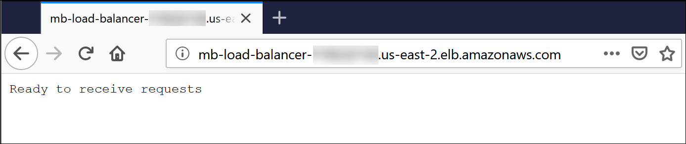
Halaman terbuka dengan pesan Ready to receive request (Siap menerima permintaan). Pesan ini dikembalikan oleh aplikasi papan pesan ketika tidak ada jalur sumber daya yang disertakan dalam permintaan GET.
Tip pemecahan masalah: Jika Anda mendapatkan kode kesalahan HTTP terkait server, tunggu beberapa saat, lalu coba lagi. Kontainer mungkin perlu waktu beberapa menit untuk terdaftar sebagai sehat dan mulai menerima lalu lintas.
- Di bilah alamat browser, tambahkan
/apidi akhir URL dan tekan ENTER.
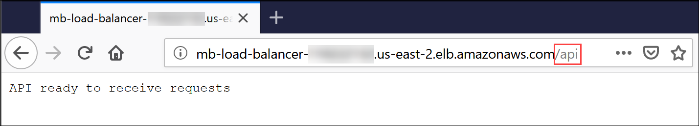
Aplikasi harus mengembalikan pesan API ready to receive requests (API siap menerima permintaan).
- Uji pengambilan semua pengguna dalam basis data. Di bilah alamat browser, tambahkan
/usersdi akhir URL dan tekan ENTER.
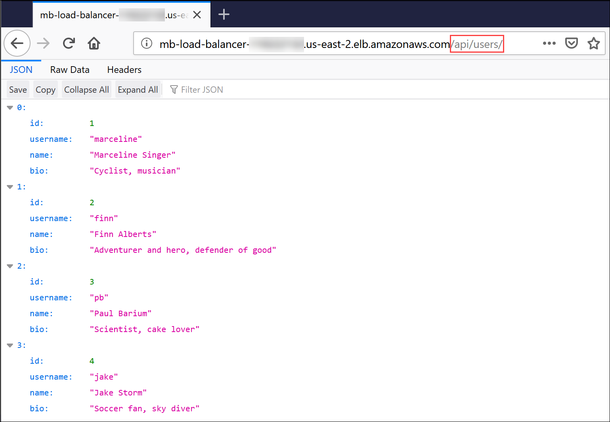
Aplikasi mengembalikan objek JSON yang berisi daftar empat pengguna dalam basis data.
- Ambil informasi untuk pengguna pertama dalam basis data. Di bilah alamat browser, tambahkan
/1di akhir URL dan tekan Enter.

Aplikasi mengembalikan objek JSON yang berisi informasi untuk Marcerline Singer, yang merupakan pengguna pertama dalam basis data.
- Selanjutnya, Anda akan mengambil semua utas dalam basis data. Di bilah alamat browser, ubah URI setelah nama DNS penyeimbang beban menjadi
/api/threadsdan tekan ENTER.
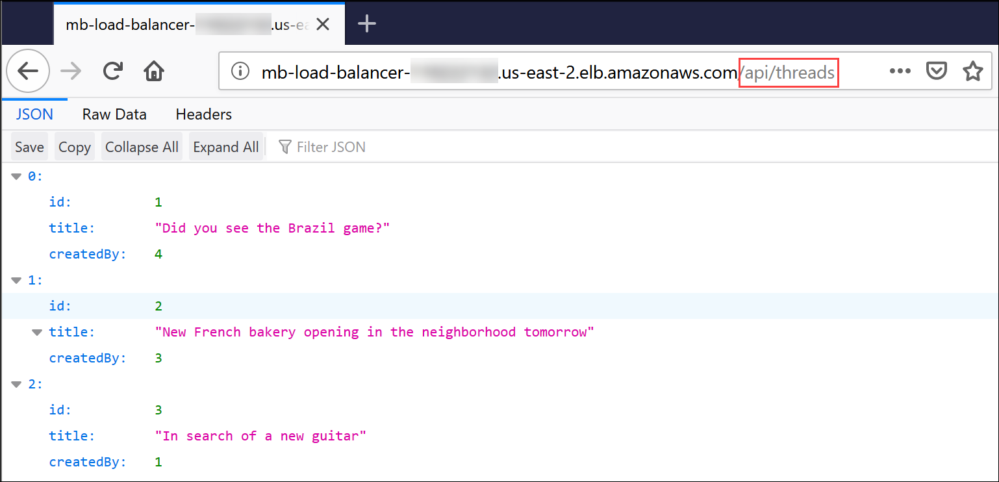
Aplikasi mengembalikan sebuah objek JSON yang berisi tiga utas dalam basis data.
- Terakhir, ambil posting untuk utas kedua dalam basis data. Di bilah alamat browser, ubah URI setelah nama DNS penyeimbang beban menjadi
/api/posts/in-thread/2dan tekan ENTER.
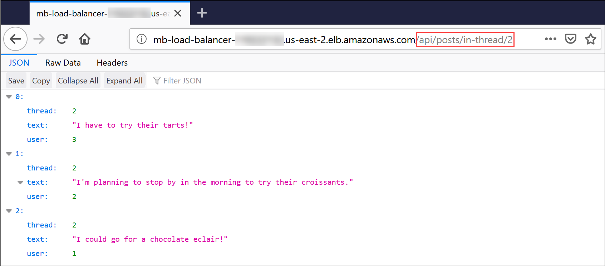
Aplikasi mengembalikan objek JSON yang berisi pesan posting untuk utas kedua dalam basis data. Pesan-pesan tersebut terkait dengan toko roti.
- Opsional, panggil jalur sumber daya lain yang dapat dilayani aplikasi. Setelah selesai pengujian, tutup tab browser aplikasi.
Sekarang Anda telah berhasil melakukan containerization aplikasi papan pesan monolitik dan men-deploy-nya ke lingkungan Amazon ECS.
Tugas 5: Pemfaktoran ulang (refactor) monolit
Dalam tugas ini, Anda akan memecahkan aplikasi papan pesan monolitik dalam kontainer menjadi beberapa layanan mikro yang saling berhubungan. Anda kemudian akan mendorong setiap gambar layanan mikro ke repositori Amazon ECR. Setiap layanan mikro melakukan satu kemampuan aplikasi bisnis tunggal, dan dapat ditingkatkan secara mandiri dari layanan mikro lainnya. Aplikasi ini dibagi menjadi beberapa layanan mikro berikut, yang mewakili kelas objek tingkat atas yang dilayani oleh API aplikasi:
- Layanan mikro pengguna – Sebuah layanan untuk semua jalur REST yang terkait dengan pengguna (
/api/users/*) - Layanan mikro utas – Sebuah layanan untuk semua jalur REST yang terkait dengan utas (
/api/threads/*) - Layanan mikro posting – Sebuah layanan untuk semua jalur REST terkait posting (
/api/posts/*)
Untuk mempercepat pemfaktoran ulang (refactor), versi layanan mikro aplikasi disediakan untuk Anda dalam folder 3-containerized-microservices lingkungan AWS Cloud9 Anda.
Langkah-langkah yang Anda lakukan dalam tugas ini adalah:
- Meninjau aplikasi layanan mikro yang difaktor ulang (refactor)
- Menyediakan repositori Amazon ECR untuk setiap layanan mikro
- Membangun dan mendorong gambar untuk setiap layanan mikro
Tugas 5.1: Meninjau aplikasi layanan mikro yang difaktor ulang (refactor)
Dalam subtugas ini, Anda akan meluangkan waktu beberapa menit untuk meninjau file guna membantu Anda memahami perubahan yang dibuat untuk memfaktor ulang (refactor) aplikasi menjadi layanan mikro.
- Beralih ke tab browser AWS Cloud9 IDE.
- Di panel Environment (Lingkungan) di sebelah kiri, perluas folder 3-containerized-microservices.
Folder ini sekarang memiliki tiga subfolder terpisah bernama posting, utas, dan pengguna, yang mewakili tiga layanan mikro aplikasi. Setiap subfolder berisi file implementasi untuk layanan mikro yang sesuai.
- Perluas subfolder posting, utas, dan pengguna.
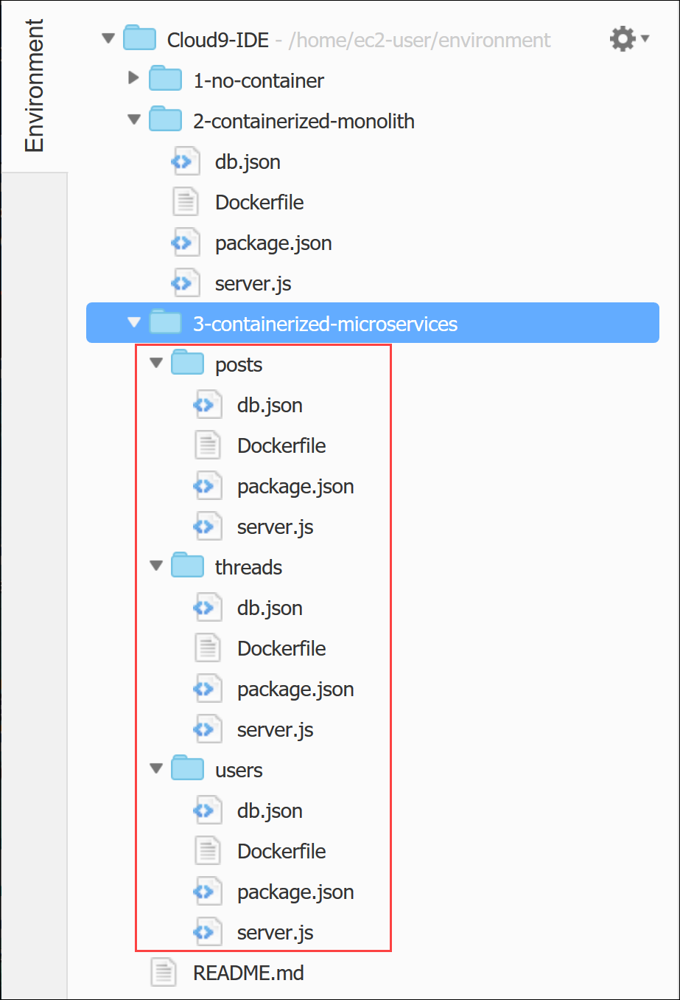
Perhatikan bahwa setiap subfolder berisi salinan file aplikasi yang sama seperti aplikasi monolit dalam kontainer. File db.json, Dockerfile, dan package.json di setiap subfolder identik dengan pasangan monolitnya dalam kontainer. File server.js adalah satu-satunya file yang berubah karena pemfaktoran ulang (refactor).
- Dalam subfolder pengguna, buka server.js dalam tab editor dengan mengekliknya dua kali.
Baris 13 sampai 20 berbeda dari versi monolit dalam kontainer karena program itu hanya mendefinisikan metode dan implementasi API yang terkait dengan jalur sumber daya pengguna.
- Dalam subfolder Utas, buka server.js dalam tab editor dengan mengekliknya dua kali.
Baris 13 sampai 20 berbeda dari versi monolit dalam kontainer karena program itu hanya mendefinisikan metode dan implementasi API yang terkait dengan jalur sumber daya utas.
- Dalam subfolder posting, buka server.js dalam tab editor dengan mengekliknya dua kali.
Baris 13 sampai 21 berbeda dari versi monolit dalam kontainer karena program itu hanya mendefinisikan metode dan implementasi API yang terkait dengan jalur sumber daya posting.
Singkatnya, satu-satunya perubahan yang diperlukan untuk faktor ulang (refactor) aplikasi adalah dengan membagi handler metode API RESTful dalam versi monolitik server.js menjadi tiga file server.js yang terpisah. Setiap file server.js individual berisi subset handler metode API yang relevan.
Tugas 5.2: Menyediakan repositori Amazon ECR untuk setiap layanan mikro
Serupa dengan apa yang Anda lakukan untuk versi monolit dalam kontainer, sekarang Anda akan membuat repositori Amazon ECR untuk setiap aplikasi layanan mikro.
Sekarang Anda akan membuat repositori untuk gambar kontainer layanan mikro Pengguna, Utas, dan Posting.
- Untuk membuka konsol Amazon ECR, buka tab browser AWS Management Console (Konsol Manajemen AWS), pilih Service(Layanan), lalu pilih Containers > Elastic Container Registry (Kontainer > Elastic Container Registry).
- Pilih Create repository (Buat repositori).
- Dalam Repository name (Nama repositori), masukkan
mb-users-repo. - Pilih Create repository (Buat repositori). Sebuah pesan ditampilkan di bagian atas halaman yang menunjukkan bahwa repositori berhasil dibuat.
- Ulangi langkah-langkah sebelumnya untuk membuat dua repositori untuk dua layanan mikro lainnya, dengan informasi repositori berikut.
- Nama repositori Utas:
mb-threads-repo - Nama repositori Posting:
mb-posts-repo
Bila Anda telah membuat repositori untuk ketiga layanan mikro, daftar Repositori akan terlihat seperti contoh berikut:
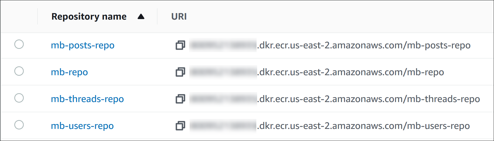
Tugas 5.3: Membangun dan mendorong gambar untuk setiap layanan mikro
Selanjutnya, Anda akan membangun setiap gambar kontainer layanan mikro dan mendorongnya ke repositori yang sesuai. Dalam langkah-langkah berikut, Anda akan menggunakan perintah siap pakai yang disediakan oleh konsol Amazon ECR untuk menyelesaikan tugas.
Membangun dan mendorong layanan mikro Pengguna
Anda akan mulai dengan gambar kontainer untuk layanan mikro Pengguna.
- Beralih ke tab browser AWS Cloud9 IDE.
- Di tab terminal, ubah direktori ke folder 3-containerized-microservices/users dengan memasukkan perintah berikut:
xxxxxxxxxxcd ~/environment/3-containerized-microservices/users- Beralih ke tab browser konsol Amazon ECR.
- Dalam daftar Repositories (Repositori), pilih mb-users-repo.
- Di bagian atas halaman, pilih View push commands (Lihat perintah push).
Jendela sembulan Push commands for mb-users-repo (Perintah push untuk mb-users-repo) terbuka.
Pertama, Anda akan membangun gambar Docker untuk layanan mikro.
- Dalam jendela Push commands for mb-users-repo (Perintah push untuk mb-users-repo), salin perintah kedua ke clipboard dengan memilih ikon Copy (Salin) di sebelahnya. Perintah itu akan kelihatan seperti:
xxxxxxxxxxdocker build -t mb-users-repo .Catatan: Pastikan untuk menyertakan titik (.) di akhir perintah.
- Beralih ke tab browser AWS Cloud9 IDE.
- Dalam tab terminal, tempel perintah yang disalin dan jalankan dengan menekan ENTER.
Ketika perintah selesai, Anda akan melihat pesan Successfully built nnnnnnnnnn (Berhasil membangun nnnnnnnnnn) dan Successfully tagged mb-users-repo:latest (Berhasil menandai mb-users-repo:latest).
Selanjutnya, Anda akan menandai gambar dengan URI repositori, sehingga dapat terdorong oleh repositori.
- Beralih ke tab browser konsol Amazon ECR.
- Dalam jendela Push commands for mb-users-repo (Perintah push untuk mb-users-repo), salin perintah ketiga ke clipboard dengan memilih ikon Copy (Salin) di sebelahnya. Perintah itu akan kelihatan seperti:
xxxxxxxxxxdocker tag mb-users-repo:latest 1234567890.dkr.ecr.us-east-2.amazonaws.com/mb-users- repo:latest- Beralih ke tab browser AWS Cloud9 IDE.
- Dalam tab terminal, tempel perintah yang disalin dan jalankan dengan menekan ENTER.
Perintah tidak mengembalikan apa pun jika berhasil diselesaikan.
Terakhir, dorong gambar kontainer ke repositori layanan mikro.
- Beralih ke tab browser konsol Amazon ECR.
- Dalam jendela Push commands for mb-users-repo (Perintah push untuk mb-users-repo), salin perintah keempat ke clipboard dengan memilih ikon Copy (Salin) di sebelahnya. Perintah itu akan kelihatan seperti:
xxxxxxxxxxdocker push 1234567890.dkr.ecr.us-east-2.amazonaws.com/mb-users-repo:latest- Beralih ke tab browser AWS Cloud9 IDE.
- Dalam tab terminal, tempel perintah yang disalin dan jalankan dengan menekan ENTER.
Perintah menghasilkan beberapa pesan saat tiap lapisan gambar didorong ke repositori.
Sekarang Anda akan memverifikasi bahwa gambar berhasil diunggah.
- Beralih ke tab browser konsol Amazon ECR dan tutup jendela pop-up Push commands for mb-users-repo (Perintah push untuk mb-users-repo).
- Pilih ikon Refresh (Segarkan).
Dalam daftar Image (Gambar), Anda melihat gambar kontainer yang Anda dorong diidentifikasi oleh tanda terbaru.
- Rekam Image URI (URI Gambar). Dalam daftar Images (Gambar), cari Image URI (URI Gambar) dari gambar versi terbaru, dan pilih ikon Copy (Salin) di sampingnya.
- Tempel nilai dalam editor teks dan beri label sebagai
Users Image URI(URI Gambar Pengguna). Anda akan menggunakannya pada langkah berikutnya.
Membangun dan mendorong layanan mikro Utas
Selanjutnya, Anda akan membangun dan mendorong gambar kontainer untuk layanan mikro Utas.
- Beralih ke tab browser AWS Cloud9 IDE.
- Di tab terminal, ubah direktori ke folder 3-containerized-microservices/threads dengan memasukkan perintah berikut:
xxxxxxxxxxcd ~/environment/3-containerized-microservices/threads- Beralih ke tab browser konsol Amazon ECR.
- Di panel navigasi, pilih Repositories (Repositori) dan dalam daftar Repositories (Repositori), pilih mb-threads-repo.
- Pilih View push commands (Lihat perintah push).
Jendela sembulan Push commands for mb-threads-repo (Perintah push untuk mb-threads-repo) terbuka.
Pertama, Anda akan membangun gambar Docker untuk layanan mikro.
- Di jendela sembulan, salin perintah kedua dengan memilih ikon Copy (Salin). Perintah itu akan kelihatan seperti:
xxxxxxxxxxdocker build -t mb-threads-repo .Catatan: Pastikan untuk menyertakan titik (.) di akhir perintah.
- Beralih ke tab browser AWS Cloud9 IDE.
- Di tab terminal, tempel perintah yang disalin dan jalankan.
Ketika perintah selesai, Anda akan melihat pesan Successfully built nnnnnnnnnn (Berhasil membangun nnnnnnnnnn) dan Successfully tagged mb-threads-repo:latest (Berhasil menandai mb-threads-repo:latest).
Selanjutnya, Anda akan menandai gambar dengan URI repositori, sehingga dapat terdorong oleh repositori.
- Beralih ke tab browser konsol Amazon ECR.
- Di jendela sembulan, salin perintah ketiga dengan memilih ikon Copy (Salin). Perintah itu akan kelihatan seperti:
xxxxxxxxxxdocker tag mb-threads-repo:latest 1234567890.dkr.ecr.us-east-2.amazonaws.com/mb-threads-repo:latest- Beralih ke tab browser AWS Cloud9 IDE.
- Di tab terminal, tempel perintah yang disalin dan jalankan.
Perintah tidak mengembalikan apa pun jika berhasil diselesaikan.
Terakhir, Anda akan mendorong gambar kontainer ke repositori layanan mikro.
- Beralih ke tab browser konsol Amazon ECR.
- Di jendela sembulan, salin perintah keempat dengan memilih ikon Copy (Salin). Perintah itu akan kelihatan seperti:
xxxxxxxxxxdocker push 1234567890.dkr.ecr.us-east-2.amazonaws.com/mb-threads-repo:latest- Beralih ke tab browser AWS Cloud9 IDE.
- Di tab Terminal, tempel perintah yang disalin dan jalankan.
Perintah menghasilkan beberapa pesan saat tiap lapisan gambar didorong ke repositori.
Sekarang Anda akan memverifikasi bahwa gambar berhasil diunggah.
- Beralih ke tab browser konsol Amazon ECR dan tutup jendela sembulan Push commands for mb-threads-repo (Perintah push untuk mb-threads-repo).
- Pilih ikon Refresh (Segarkan).
Dalam daftar Image (Gambar), Anda akan melihat gambar kontainer yang Anda dorong diidentifikasi oleh tanda terbaru.
- Rekam Image URI (URI Gambar). Dalam daftar Images (Gambar), buka Image URI (URI Gambar) untuk versi terbaru, dan pilih ikon Copy (Salin).
- Tempel nilai dalam editor teks dan beri label sebagai
Threads Image URI(URI Gambar Utas). Anda akan menggunakannya pada langkah berikutnya.
Membangun dan mendorong layanan mikro Posting
Terakhir, Anda akan membangun dan mendorong gambar kontainer untuk layanan mikro Posting.
- Beralih ke tab browser AWS Cloud9 IDE.
- Di tab terminal, ubah direktori ke folder 3-containerized-microservices/posts dengan memasukkan perintah berikut:
xxxxxxxxxxcd ~/environment/3-containerized-microservices/posts- Beralih ke tab browser konsol Amazon ECR.
- Di panel navigasi, pilih Repositories (Repositori).
- Dalam daftar Repositories (Repositori), pilih mb-posts-repo.
- Pilih View push commands (Lihat perintah push).
Jendela sembulan Push commands for mb-posts-repo (Perintah push untuk mb-posts-repo) terbuka.
Pertama, Anda akan membangun gambar Docker untuk layanan mikro.
- Di jendela sembulan, salin perintah kedua. Perintah itu akan kelihatan seperti:
xxxxxxxxxxdocker build -t mb-posts-repo .Catatan: Pastikan bahwa Anda menyertakan titik (.) di akhir perintah.
- Beralih ke tab browser AWS Cloud9 IDE.
- Di tab terminal, tempel dan jalankan perintah yang disalin.
Ketika perintah selesai, Anda akan melihat pesan Successfully built nnnnnnnnnn (Berhasil membangun nnnnnnnnnn) dan Successfully tagged mb-posts-repo:latest (Berhasil menandai mb-posts-repo:latest).
Selanjutnya, Anda akan menandai gambar dengan URI repositori, sehingga dapat terdorong oleh repositori.
- Beralih ke tab browser konsol Amazon ECR.
- Di jendela sembulan, salin perintah ketiga. Perintah itu akan kelihatan seperti:
xxxxxxxxxxdocker tag mb-posts-repo:latest 1234567890.dkr.ecr.us-east-2.amazonaws.com/mb-posts-repo:latest- Beralih ke tab browser AWS Cloud9 IDE.
- Di tab Terminal, tempel dan jalankan perintah yang disalin.
Perintah tidak mengembalikan apa pun jika berhasil diselesaikan.
Terakhir, Anda akan mendorong gambar kontainer ke repositori layanan mikro.
- Beralih ke tab browser konsol Amazon ECR.
- Di jendela sembulan, salin perintah keempat. Perintah itu akan kelihatan seperti:
xxxxxxxxxxdocker push 1234567890.dkr.ecr.us-east-2.amazonaws.com/mb-posts-repo:latest- Beralih ke tab browser AWS Cloud9 IDE.
- Di tab Terminal, tempel dan jalankan perintah yang disalin.
Perintah menghasilkan beberapa pesan saat tiap lapisan gambar didorong ke repositori.
Sekarang Anda akan memverifikasi bahwa gambar berhasil diunggah.
- Beralih ke tab browser konsol Amazon ECR.
- Tutup jendela sembulan Push commands for mb-posts-repo (Perintah push untuk mb-posts-repo).
- Pilih ikon Refresh (Segarkan).
Dalam daftar Image (Gambar), Anda akan melihat gambar kontainer yang Anda dorong, yang seharusnya mempunyai tanda terbaru.
- Rekam URI Gambar. Dalam daftar Images (Gambar), salin Image URI (URI Gambar) dari gambar versi terbaru.
- Tempel nilai dalam editor teks dan beri label sebagai
Posts Image URI(URI Gambar Posting). Anda akan menggunakannya pada langkah berikutnya.
Anda telah berhasil membangun gambar kontainer untuk layanan mikro dalam aplikasi Anda dan mendorongnya ke Amazon ECR.
Tugas 6: Men-deploy layanan mikro dalam kontainer
Dalam tugas ini, Anda akan men-deploy aplikasi papan pesan layanan mikro dalam kontainer ke klaster ECS yang sama dengan yang Anda gunakan untuk monolit dalam kontainer. Anda juga akan menggunakan Application Load Balancer yang sama dengan sebelumnya. Namun, dalam tugas ini, Anda akan mengonfigurasikannya untuk merutekan permintaan ke grup target yang berbeda (satu untuk setiap kontainer layanan mikro) berdasarkan jalur URI permintaan.
Diagram berikut menunjukkan arsitektur deployment aplikasi layanan mikro dalam kontainer. Diagram ini juga menampilkan sumber daya yang akan Anda buat.
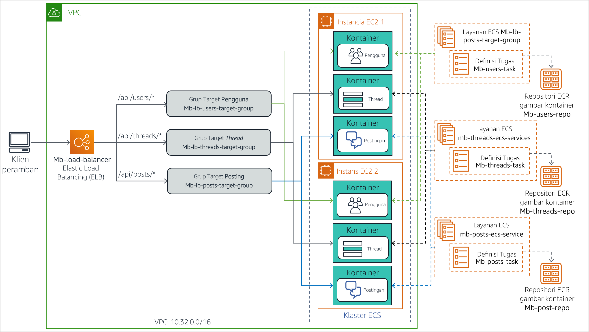
Langkah-langkah yang Anda lakukan dalam tugas ini adalah:
- Membuat definisi tugas untuk setiap layanan mikro.
- Mengonfigurasi Application Load Balancer
- Men-deploy layanan mikro sebagai layanan ECS.
- Memvalidasi deployment.
Tugas 6.1: Membuat definisi tugas untuk setiap layanan mikro
Karena layanan mikro dalam aplikasi dimaksudkan untuk berjalan secara mandiri, layanan mikro tersebut memerlukan definisi tugas masing-masing. Dalam subtugas ini, Anda akan membuat tiga definisi tugas yang menjalankan gambar kontainer setiap layanan mikro individual.
Membuat definisi tugas untuk kontainer Pengguna
Anda akan mulai dengan membuat definisi tugas untuk kontainer layanan mikro Pengguna.
- Di panel navigasi konsol Amazon ECR, pilih Task definitions (Definisi tugas), kemudian pilih Create new Task Definitions (Buat definisi tugas baru).
Catatan: Anda mungkin perlu memperluas menu di panel navigasi untuk menemukan Task Definitions (Definisi Tugas).
- Pada halaman Step 2: Select launch type compatibility (Langkah 2: Pilih kompatibilitas jenis peluncuran), pilih kartu EC2.
- Pilih Next step (Langkah berikutnya).
- Dalam Step 2: Configure task and container definitions (langkah 2: Konfigurasikan tugas dan definisi kontainer), konfigurasikan pengaturan berikut:
Task Definition Name (Nama Definisi Tugas):
mb-users-taskGulir ke bagian Container Definitions (Definisi Kontainer) dan pilih Add container (Tambahkan kontainer). Di halaman Add container (Tambahkan kontainer), masukkan pengaturan ini.
- Container name (Nama kontainer):
mb-users-container - Image (Gambar): Tempelkan User Image URI (URI Gambar Pengguna) yang disalin ke editor teks pada langkah sebelumnya.
- Memory Limits (Batas Memori): Pastikan bahwa Hard limit (Batas keras) dipilih, dan masukkan
256. (Hal ini menentukan jumlah maksimum memori yang diizinkan untuk diggunakan oleh kontainer.) - Port mappings > Container port (Pemetaan port > Port kontainer):
3000(Hal ini menentukan port tempat kontainer menerima permintaan.)
- Container name (Nama kontainer):
Pilih Add (Tambah).
- Gulirkan ke bawah dan pilih Create (Buat).
Pesan menunjukkan bahwa definisi tugas berhasil dibuat. Perhatikan bahwa definisi secara otomatis diberi nomor versi 1.
Membuat definisi tugas untuk kontainer Utas
Selanjutnya, Anda akan membuat definisi tugas untuk kontainer layanan mikro Utas.
- Di panel navigasi, pilih Task Definitions (Definisi Tugas), lalu pilih Create new Task Definitions (Buat Definisi Tugas baru).
- Pada Step 1: Select launch type compatibility (Langkah 1: Pilih kompatibilitas jenis peluncuran), pilih kartu EC2.
- Pilih Next step (Langkah berikutnya).
- Pada Step 2: Configure task and container definitions (Langkah 2: Konfigurasikan tugas dan definisi kontainer), konfigurasikan pengaturan berikut.
Task Definition Name (Nama Definisi Tugas):
mb-threads-taskGulir ke bagian Container Definitions (Definisi Kontainer) dan pilih Add container (Tambahkan kontainer). Di halaman Add container (Tambahkan kontainer) yang terbuka, masukkan pengaturan ini.
- Container name (Nama kontainer):
mb-threads-container - Image (Gambar): Tempelkan Threads Image URI (URI Gambar Utas) yang disalin ke editor teks pada langkah sebelumnya.
- Memory Limits (Batas Memori): Pastikan bahwa Hard limit (Batas keras) dipilih, dan masukkan
256. - Port Mapping > Container port (Pemetaan port > Port kontainer):
3000
- Container name (Nama kontainer):
Pilih Add (Tambah).
- Gulirkan ke bawah dan pilih Create (Buat).
Pesan menunjukkan bahwa definisi tugas berhasil dibuat. Definisi secara otomatis diberi nomor versi 1.
Membuat definisi tugas untuk kontainer Posting
Terakhir, Anda sekarang akan membuat definisi tugas untuk kontainer layanan mikro Posting.
- Di panel navigasi, pilih Task Definitions (Definisi Tugas) lalu pilih Create new Task Definitions (Buat Definisi Tugas baru).
- Pada Step 1: Select launch type compatibility (Langkah 1: Pilih kompatibilitas jenis peluncuran), pilih kartu EC2.
- Pilih Next step (Langkah berikutnya).
- Pada Step 2: Configure task and container definitions (Langkah 2: Konfigurasikan tugas dan definisi kontainer), konfigurasikan pengaturan ini.
Task Definition Name (Nama Definisi Tugas):
mb-posts-taskGulir ke bawah ke bagian Container Definitions (Definisi Kontainer) dan pilih Add container (Tambahkan kontainer). Di halaman Add container (Tambahkan kontainer), masukkan pengaturan ini.
- Container name (Nama kontainer):
mb-posts-container - Image (Gambar): Tempelkan Posts Image URI (URI Gambar Posting) yang Anda salin.
- Memory Limits (Batas Memori): Pastikan bahwa Hard limit (Batas keras) dipilih, dan masukkan
256 - Port Mapping > Container port (Pemetaan port > Port kontainer):
3000 - Pilih Add (Tambah).
- Container name (Nama kontainer):
- Gulir ke bawah dan pilih Create (Buat).
Pesan menunjukkan bahwa definisi tugas berhasil dibuat. Definisi secara otomatis diberi nomor versi 1.
Tugas 6.2: Mengonfigurasi Application Load Balancer
Dalam subtugas ini, Anda akan membuat grup target penyeimbang beban baru untuk setiap layanan mikro, sehingga permintaan dapat diarahkan ke kontainernya. Anda juga mengonfigurasi aturan listener penyeimbang beban untuk meneruskan permintaan ke grup target yang benar, berdasarkan jalur URI permintaan.
Membuat grup target untuk layanan mikro Pengguna
- Di tab browser konsol Amazon ECS, pilih Services (Layanan), lalu pilih Compute (Komputasi) > EC2.
- Di panel navigasi, gulir ke bawah, lalu pilih Target Groups (Grup Target).
- Pilih Create target group (Buat grup target).
- Pada Step 1: Specify group details (Langkah 1: Tentukan detail grup), konfigurasikan pengaturan berikut.
Target group name (Nama grup target):
mb-lb-users-target-groupVPC: Pilih load balancer VPC ID (ID VPC penyeimbang beban). Ini harus mirip dengan vpc-nnnnnnnnnn (10.32.0.0/16).
Gulir ke bawah, perluas Advanced health check settings (Pengaturan pemeriksaan kesehatan lanjutan) dan masukkan pengaturan berikut.
- Healthy threshold (Ambang batas sehat):
2(Pengaturan ini memberi tahu penyeimbang beban bahwa jika menerima dua pemeriksaan kesehatan yang berhasil berturut-turut dari target, maka target dianggap sehat) - Interval:
6(Hal ini meningkatkan frekuensi pemeriksaan kesehatan menjadi setiap 6 detik sekali)
- Healthy threshold (Ambang batas sehat):
- Pilih Next (Berikutnya).
- Pada Step 2: Register targets (Langkah 2: Daftar target), pilih Create target group (Buat grup target).
Jendela terbuka dengan pesan bahwa grup target berhasil dibuat.
- Tutup jendela pesan.
mb-lb-users-target-group muncul dalam daftar grup target.
Membuat grup target untuk layanan mikro Utas
Selanjutnya, Anda akan membuat grup target untuk layanan mikro Utas.
- Pilih Create target group (Buat grup target) dan di Step 1: Specify group details (Langkah 1: Tentukan detail grup), konfigurasikan pengaturan ini.
Target group name (Nama grup target):
mb-lb-threads-target-groupVPC: Pilih load balancer VPC ID (ID VPC penyeimbang beban). Ini harus mirip dengan vpc-nnnnnnnnnn (10.32.0.0/16)
Di bagian Advanced health check settings (Pengaturan pemeriksaan kesehatan lanjutan), masukkan pengaturan ini.
- Healthy threshold (Ambang batas sehat):
2 - Interval:
6
- Healthy threshold (Ambang batas sehat):
- Pilih Next (Berikutnya).
- Pada Step 2: Register targets (Langkah 2: Daftar target), pilih Create target group (Buat grup target).
Jendela terbuka dengan pesan bahwa grup target berhasil dibuat.
- Tutup jendela pesan.
mb-lb-threads-target-group muncul dalam daftar grup target.
Membuat grup target untuk layanan mikro Posting
Terakhir, Anda akan membuat grup target untuk layanan mikro Posting.
- Pilih Create target group (Buat grup target) dan konfigurasikan pengaturan ini.
Target group name (Nama grup target):
mb-lb-posts-target-groupVPC: Pilih ID load balancer VPC (VPC penyeimbang beban). Ini harus mirip dengan vpc-nnnnnnnnnn (10.32.0.0/16).
Di bagian Advanced health check settings (Pengaturan pemeriksaan kesehatan lanjutan), masukkan pengaturan ini.
- Healthy threshold (Ambang batas sehat):
2 - Interval:
6
- Healthy threshold (Ambang batas sehat):
- Pilih Next (Berikutnya), kemudian pilih Create target group (Buat grup target).
Jendela terbuka dengan pesan bahwa grup target berhasil dibuat.
- Tutup jendela pesan.
mb-lb-posts-target-grup muncul dalam daftar grup target.
Membuat aturan listener untuk penyeimbang beban
Anda telah membuat grup target untuk setiap layanan mikro. Anda akan memodifikasi aturan listener untuk penyeimbang beban. Aturan-aturan ini akan mengarahkan rute lalu lintas ke setiap penyeimbang beban berdasarkan jalur URI permintaan.
- Buka halaman detail untuk mb-load-balancer dengan membuka panel navigasi dan memilih Load Balancers (Penyeimbang Beban).
- Di panel bawah, pilih tab Listener.
- Pada baris untuk listener HTTP:80, pilih View/edit rules (Lihat/edit aturan).
Editor aturan terbuka.
Sekarang Anda akan membuat aturan baru untuk meneruskan permintaan ke grup target Pengguna jika URI permintaan sesuai dengan pola /api/users*.
- Pada bilah alat di bagian atas editor, tambahkan aturan baru dengan memilih ikon Add rules(Tambahkan aturan) (+).
Baris Insert Rule (Sisipkan Aturan) muncul dalam daftar aturan.
- Pilih Insert Rule (Masukkan Aturan).
Sebuah kotak aturan muncul yang memungkinkan Anda untuk menambahkan syarat IF dan tindakan THEN.
- Konfigurasikan pengaturan berikut untuk aturan ini.
- Add condition (Tambahkan syarat): Path (Jalur)
- is > Value:
/api/users* - Add action (Tambahkan tindakan): Forward to (Teruskan)
- Forward to > Target group (Teruskan ke > Grup target): mb-lb-users-target-group
Kotak aturan akan terlihat seperti contoh berikut:
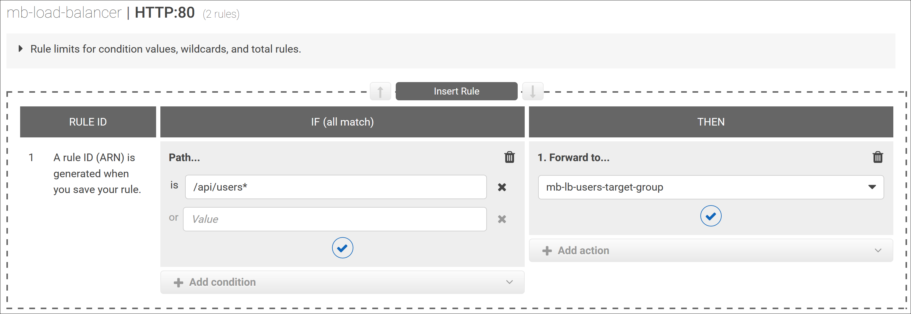
- Pilih Save (Simpan).
Aturan ditambahkan ke daftar sebagai aturan 1.
Sekarang Anda akan membuat aturan untuk meneruskan permintaan ke grup target Utas jika URI permintaan cocok dengan pola /api/threads*.
- Pada baris di bawah aturan 1, pilih Insert Rule (Sisipkan Aturan).
Editor aturan terbuka.
- Konfigurasikan pengaturan berikut untuk aturan ini.
- Add condition (Tambahkan syarat): Path (Jalur)
- is > Value:
/api/threads* - Add action (Tambahkan tindakan): Forward to (Teruskan)**
- Forward to > Target group (Teruskan ke > Grup target): mb-lb-threads-target-group
- Pilih Save (Simpan).
Aturan ditambahkan ke daftar sebagai aturan 2.
Anda sekarang akan membuat aturan baru untuk meneruskan permintaan ke grup target Posting jika URI permintaan cocok dengan pola /api/posts*.
- Pada baris di bawah aturan 2, pilih Insert Rule (Sisipkan Aturan).
- Dalam editor aturan, konfigurasikan pengaturan ini:
- Add condition (Tambahkan syarat): Path (Jalur)
- is > Value:
/api/posts* - Add action (Tambahkan tindakan): Forward to (Teruskan)
- Forward to > Target group (Teruskan ke > Grup target): mb-lb-posts-target-group
- Pilih Save (Simpan).
Aturan ditambahkan ke daftar sebagai aturan 3.
Sekarang, Anda akan membuat aturan baru untuk meneruskan permintaan ke grup target Pengguna jika URI permintaan cocok dengan pola / atau /api. Anda bisa memilih salah satu grup target aplikasi karena layanan mikro yang sesuai dapat menangani kedua jenis permintaan.
- Pada baris di bawah aturan 3, pilih Insert Rule (Sisipkan Aturan).
- Dalam editor aturan, konfigurasikan pengaturan ini.
- Add condition (Tambahkan syarat): Path (Jalur)
- is > Value:
/ - or > Value:
/api - Add action (Tambahkan tindakan): Forward to (Teruskan)
- Forward to > Target group (Teruskan ke > Grup target): mb-lb-users-target-group
- Pilih Save (Simpan).
Aturan ditambahkan ke daftar sebagai aturan 4.
Terakhir, Anda akan mengubah tindakan untuk aturan (default) terakhir, sehingga setiap URI permintaan lain mengembalikan halaman kesalahan dengan pesan Invalid request (Permintaan tidak valid).
- Pada bilah alat di bagian atas, pilih ikon Edit rules (Edit aturan) (pensil).
Editor aturan beralih ke mode edit.
- Gulir ke aturan terakhir dan pilih ikon Edit Rule (Edit Aturan) (pensil).
- Dalam editor aturan, konfigurasikan pengaturan ini.
- Then: Hapus tindakan Forward to (Teruskan ke) yang ada dengan memilih ikon Delete (Hapus) (tempat sampah).
- Add action (Tambahkan tindakan): Return fixed response (Kembalikan respons tetap)
- Response code (Kode respons):
200 - Respons body (Isi respons):
Invalid request(Permintaan tidak valid)
Editor aturan harus terlihat seperti contoh ini:
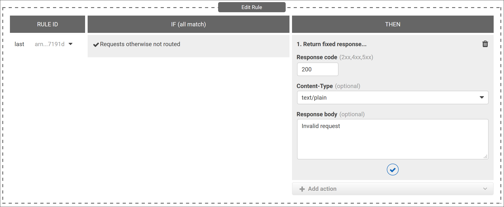
- Pilih Update (Perbarui).
Pesan menunjukkan bahwa aturan telah berhasil diperbarui.
Aturan listener terakhir untuk penyeimbang beban harus terlihat seperti contoh ini:

- Untuk kembali ke halaman detail penyeimbang beban, pilih ikon Tanda panah kembali (di area kiri atas jendela).
Anda telah menyelesaikan perubahan yang diperlukan pada konfigurasi penyeimbang beban.
Tugas 6.3: Men-deploy layanan mikro sebagai layanan ECS
Dalam subtugas ini, Anda akan men-deploy tiga layanan mikro ke klaster sebagai layanan ECS.
Membuat layanan ECS untuk Pengguna
Sekarang Anda akan membuat layanan ECS untuk definisi tugas layanan mikro pengguna.
- Di tab browser Amazon EC2 console (Konsol Amazon EC2), pilih Service (Layanan), dan pilih Containers > Elastic Container Service (Kontainer > Elastic Container Service).
- Dalam daftar klaster, pilih mb-ecs-cluster.
- Di tab Service (Layanan), buka wizard Create Service (Buat Layanan) dengan memilih Create (Buat).
- Pada Step 1: Configure service (Langkah 1: Konfigurasikan layanan), konfigurasikan pengaturan berikut.
- Launch type (Jenis peluncuran): EC2 (Anda menjalankan layanan mikro dalam kontainer secara langsung pada klaster instans EC2.)
- Task Definition > Family(Definisi Tugas > Keluarga): mb-users-task
- Service name (Nama layanan):
mb-users-ecs-service - Service type (Jenis layanan): REPLICA (Pengaturan ini menetapkan strategi penjadwalan yang menempatkan dan mempertahankan jumlah tugas yang diinginkan di seluruh klaster ECS)
- Number of tasks (Jumlah tugas):
1(Untuk latihan ini, Anda harus meluncurkan dan selalu mempertahankan satu tugas di klaster)
- Pilih Next step (Langkah berikutnya).
- Pada Step 2: Configure network (Langkah 2: Konfigurasikan jaringan), konfigurasikan pengaturan berikut.
- Load balancer type (Jenis penyeimbang beban): Application Load Balancer (Anda ingin beban tugas dalam layanan Anda diseimbangkan dengan mb-load-balancer yang Anda atur)
- Service IAM role (IAM role layanan): ecsServiceRole
- Load balancer name (Nama penyeimbang beban): mb-load-balancer
- Container to load balance (Kontainer untuk keseimbangan beban): Add to load balancer (Tambahkan ke penyeimbang beban)
- Production listener port (Port listener produksi): 80:HTTP (Anda mengaitkan kontainer dengan listener penyeimbang beban yang mendengarkan lalu lintas HTTP pada port 80)
- Target group name (Nama grup target): mb-lb-users-target-group
- Pilih Next step (Langkah berikutnya).
- Pada Step 3: Set Auto Scaling (optional) (Langkah 3: Atur Auto Scaling (opsional)), pilih Next step (Langkah berikutnya). Anda tidak perlu mengonfigurasi auto scaling tambahan.
- Di halaman Review (Tinjauan), pastikan pengaturan sudah benar dan pilih Create Service (Buat Layanan).
Halaman Launch Status (Status Peluncuran) terbuka, dan menunjukkan tugas yang dilakukan oleh wizard.
- Tunggu sampai semua tugas menampilkan tanda centang untuk menunjukkan bahwa tugas tersebut selesai.
- Pilih View Service (Lihat Layanan).
Halaman detail untuk mb-users-ecs-layanan terbuka. Tab Tasks (Tugas) menunjukkan bahwa sekarang ada satu tugas yang menjalankan kontainer.
- Setelah beberapa saat, pilih tombol Refresh (Segarkan).
Status terakhir tugas harus menunjukkan nilai RUNNING.
Membuat layanan ECS untuk Utas
Selanjutnya, Anda akan membuat layanan ECS untuk definisi tugas layanan mikro Utas.
- Untuk kembali ke halaman detail klaster, di jalur breadcrumb di bagian atas halaman, pilih mb-ecs-cluster.
- Di tab Services (Layanan), pilih Create (Buat).
- Pada Step 1: Configure service (Langkah 1: Konfigurasikan layanan), konfigurasikan pengaturan berikut.
- Launch type (Jenis peluncuran): EC2
- Task Definition > Family (Definisi tugas > Keluarga): mb-threads-task
- Service name (Nama layanan):
mb-threads-ecs-service - Service type (Jenis layanan): REPLICA
- Number of tasks (Jumlah tugas):
1
- Pilih Next step (Langkah berikutnya).
- Pada Step 2: Configure network (Langkah 2: Konfigurasikan jaringan), konfigurasikan pengaturan berikut.
- Load balancing > Load balancer type (Penyeimbang beban > Jenis penyeimbang beban): Application Load Balancer
- Load balancer name (Nama penyeimbang beban): mb-load-balancer
- Container to load balance (Kontainer untuk keseimbangan beban): Add to load balancer (Tambahkan ke penyeimbang beban)
- Product listener port (Port listener produksi): 80: HTTP
- Target group name (Nama grup target): mb-lb-threads-target-group
- Pilih Next step (Langkah berikutnya).
- Pada halaman Step 3: Set Auto Scaling (optional) (Langkah 3: Atur Auto Scaling (opsional)), klik Next step (Langkah berikutnya).
- Di halaman Review (Tinjauan), pastikan pengaturan sudah benar dan pilih Create Service (Buat Layanan).
Halaman Launch Status (Status Peluncuran) terbuka dan menunjukkan tugas yang dilakukan oleh wizard.
- Tunggu sampai semua tugas menampilkan tanda centang untuk menunjukkan bahwa tugas tersebut selesai.
- Pilih View Service (Lihat Layanan).
Halaman detail untuk mb-threads-ecs-service terbuka. Tab Tasks (Tugas) menunjukkan bahwa satu tugas sedang menjalankan kontainer.
- Setelah beberapa saat, pilih Refresh (Segarkan). Last status (Status terakhir) tugas menunjukkan nilai RUNNING (BERJALAN).
Membuat layanan ECS untuk Posting
Terakhir, buat layanan ECS untuk definisi tugas layanan mikro Posting.
- Kembali ke halaman detail klaster untuk mb-ecs-cluster.
- Di tab Services (Layanan), pilih Create (Buat).
- Pada Step 1: Configure service (Langkah 1: Konfigurasikan layanan), konfigurasikan pengaturan berikut.
- Launch type (Jenis peluncuran): EC2
- Task Definition > Family (Definisi tugas > Keluarga): mb-posts-task
- Service name (Nama layanan):
mb-posts-ecs-service`` - Service type (Jenis layanan): REPLICA
- Number of tasks (Jumlah tugas):
1
- Pilih Next step (Langkah berikutnya).
- Pada Step 2: Configure network (Langkah 2: Konfigurasikan jaringan), konfigurasikan pengaturan berikut.
- Load balancing > Load balancer type (Penyeimbang beban > Jenis penyeimbang beban): Application Load Balancer
- Load balancer name (Nama penyeimbang beban): mb-load-balancer
- Container to load balance (Kontainer untuk keseimbangan beban): Add to load balancer (Tambahkan ke penyeimbang beban)
- Product listener port (Port listener produksi): 80: HTTP
- Target group name (Nama grup target): mb-lb-posts-target-group
- Pilih Next step (Langkah berikutnya).
- Di Step 3L Set Auto Scaling (optional) (Langkah 3L Atur Auto Scaling (opsional)), pilih Next step (Langkah berikutnya).
- Di halaman Review (Tinjauan), pastikan pengaturan sudah benar dan pilih Create Service (Buat Layanan).
Halaman Launch Status (Status Peluncuran) terbuka dan menunjukkan tugas yang dilakukan oleh wizard.
- Tunggu sampai semua tugas menampilkan tanda centang untuk menunjukkan bahwa tugas tersebut selesai.
- Pilih View Service (Lihat Layanan).
Halaman detail untuk mb-posts-ecs-service terbuka. Tab Tasks (Tugas) menunjukkan bahwa satu tugas sedang menjalankan kontainer.
- Setelah beberapa saat, pilih Refresh (Segarkan).
Status terakhir tugas harus menunjukkan nilai RUNNING.
- Kembali ke halaman detail klaster untuk mb-ecs-cluster.
Tiga layanan baru yang Anda buat sekarang dalam daftar Services (Layanan).

Hanya perlu beberapa detik untuk memulai semua layanan Anda. Periksa kembali apakah semua layanan dan tugas berjalan serta sehat sebelum Anda melanjutkan.
Tugas 6.4: Memvalidasi deployment
Sekarang Anda akan menguji metode API RESTful aplikasi papan pesan dari web browser. Anda juga akan memvalidasi bahwa implementasi berbasis layanan mikro bekerja dengan benar.
Pertama, Anda akan mematikan layanan ECS untuk versi aplikasi monolit dalam kontainer. Anda tidak ingin layanan ini melayani permintaan apa pun.
- Dalam daftar Service (Layanan), pilih mb-ecs-service, dan pilih Update (Perbarui).
Wizard Update Service (Layanan Pembaruan) terbuka.
- Untuk Number of tasks (Jumlah tugas), ubah nilai ke
0. (Pengaturan ini menginstruksikan Amazon ECS untuk tidak menjalankan tugas apa pun untuk layanan.) - Pilih Skip to review (Lewati untuk meninjau).
- Di halaman Review (Tinjauan), pilih Update Service (Perbarui Layanan).
Halaman Launch Status (Status Peluncuran) terbuka dengan pesan bahwa layanan telah diperbarui.
- Pilih View Service (Lihat Layanan).
Halaman detail untuk mb-ecs-service terbuka. Tab Deployment menunjukkan bahwa Running count untuk layanan adalah 0.
Catatan: Jika Anda tidak segera melihat perubahan, tunggu beberapa detik dan pilih Refresh (Segarkan).

- Buka tab browser baru, tempel Load Balancer DNS Name (Nama DNS penyeimbang beban) yang Anda catat sebelumnya, dan tekan ENTER.
Tindakan ini mengembalikan pesan Ready to receive requests (Siap untuk menerima permintaan). Aplikasi mengembalikan pesan ini ketika tidak ada jalur sumber daya yang disertakan dalam permintaan GET. Ingat dari konfigurasi aturan listener bahwa jenis permintaan ini dikirim ke layanan mikro Pengguna.
- Tambahkan
/apidi akhir URL dan tekan ENTER.
Aplikasi—khususnya, layanan mikro Pengguna mengembalikan pesan API ready to receive requests (API siap menerima permintaan).
- Uji pengambilan semua pengguna dalam basis data. Tambahkan
/usersdi akhir URL dan tekan ENTER.
Layanan mikro Pengguna mengembalikan objek JSON yang berisi daftar empat pengguna dalam basis data.
- Ambil informasi untuk pengguna pertama dalam basis data. Tambahkan
/1di akhir URL dan tekan ENTER.
Layanan mikro Users mengembalikan objek JSON yang berisi informasi untuk Marcerline Singer, yang merupakan pengguna pertama dalam basis data.
- Selanjutnya, ambil semua utas dalam basis data. Ubah URI setelah nama DNS penyeimbang beban menjadi
/api/threadsdan tekan ENTER.
Layanan mikro Utas mengembalikan objek JSON yang berisi ketiga utas dalam basis data.
- Ambil posting untuk utas kedua dalam basis data. Ubah URI setelah nama DNS penyeimbang beban menjadi
/api/posts/in-thread/2dan tekan ENTER.
Layanan mikro Posting mengembalikan objek JSON yang berisi pesan posting untuk utas kedua (yang terkait dengan toko roti) dalam basis data.
- Terakhir, uji pengajuan permintaan dengan URI yang tidak valid. Ubah URI setelah nama DNS penyeimbang beban menjadi
/xyzdan tekan ENTER.
Permintaan diteruskan ke handler default dalam aturan listener penyeimbang beban, yang mengembalikan pesan Invalid request (Permintaan tidak valid).
Anda telah berhasil mengonversi aplikasi monolitik Node.js ke arsitektur layanan mikro. Aplikasi asli berjalan, tanpa containerization, langsung pada instans. Sebaliknya, aplikasi berbasis layanan mikro di-deploy di lingkungan dalam kontainer yang diorkestrasi oleh Amazon ECS.
Mengirimkan pekerjaan Anda
- Di bagian atas instruksi ini, pilih Submit (Kirim) untuk merekam kemajuan Anda dan saat diminta, pilih Yes (Ya).
- Jika hasilnya tidak muncul setelah beberapa menit, kembali ke bagian atas instruksi ini dan pilih Grades (Nilai)
xxxxxxxxxx**Tip**: Anda dapat mengirimkan pekerjaan Anda beberapa kali. Setelah Anda mengubah pekerjaan Anda, pilih **Submit** (Kirim) lagi. Apa yang akan direkam untuk lab ini adalah pengiriman terakhir Anda.
- Untuk menemukan detail umpan balik tentang pekerjaan Anda, pilih Details (Detail) diikuti oleh View Submission Report (Lihat Laporan Pengiriman).
Lab selesai
Selamat! Anda telah menyelesaikan lab.
- Pilih End Lab (Akhiri Lab) di bagian atas halaman ini, lalu pilih Yes (Ya) untuk mengonfirmasi bahwa Anda ingin mengakhiri lab.
xxxxxxxxxxSebuah panel menunjukan bahwa *DELETE has been initiated... (*PENGHAPUSAN telah dimulai...) You may close this message box now.* (Anda dapat menutup kotak pesan ini sekarang.*)
- Pilih X di sudut kanan atas untuk menutup panel.
©2020 Amazon Web Services, Inc. dan afiliasinya. Hak cipta dilindungi undang-undang. Karya ini tidak boleh direproduksi atau didistribusikan ulang, seluruhnya atau sebagian, tanpa izin tertulis sebelumnya dari Amazon Web Services, Inc. Dilarang menyalin, meminjamkan, atau menjual secara komersial.